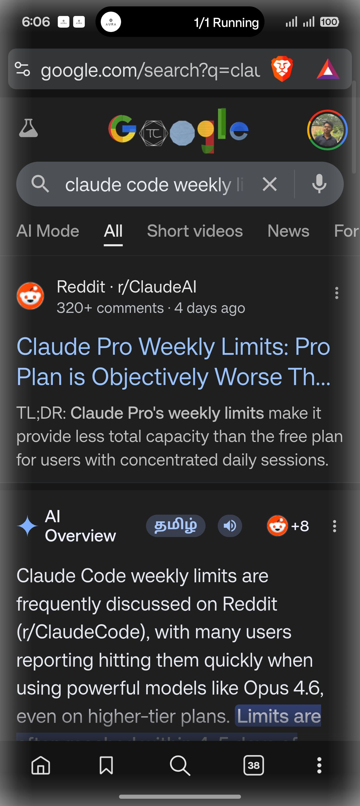

{
"text_length": 10,
"config": null
}[ "Open Brave" ]

03-15 18:06:03.100 3810 13172 I VoiceCaptureController: 📋 Backend requested UI tree: request_id=bb4250a9, reason=Action: verify 03-15 18:06:03.103 3810 5206 D UITree : Found 2 windows 03-15 18:06:03.115 3810 5206 D UITree : Window: pkg=com.android.systemui, type=3, layer=1 03-15 18:06:03.120 3810 5206 D UITree : Window: pkg=com.brave.browser, type=1, layer=0 03-15 18:06:03.121 3810 5206 D UITree : → Selected as target app window: com.brave.browser 03-15 18:06:03.122 3810 5206 I UITree : Using window: com.brave.browser 03-15 18:06:03.523 3810 5206 D UITree : UI tree validated: 150 elements, 49% valid bounds 03-15 18:06:03.527 3810 5206 I VoiceCaptureController: 📤 Sent UI tree response: request_id=bb4250a9, screen=1240x2772 03-15 18:06:03.545 3810 13172 I VoiceCaptureController: 📸 Backend requested screenshot: request_id=bb4250a9, reason=Action: verify 03-15 18:06:03.547 3810 5206 D Screenshot: MediaProjection status: available=true (projection=true, resources=true, permData=true) 03-15 18:06:03.547 3810 5206 D Screenshot: Captured image immediately 03-15 18:06:03.549 3810 5206 D Screenshot: Buffer: 14192640 bytes, rowStride=5120, pixelStride=4 03-15 18:06:03.565 3810 3810 D Screenshot: Buffer: 14192640 bytes, rowStride=5120, pixelStride=4 03-15 18:06:03.607 3810 5206 I Screenshot: Compressed bitmap: 304202 bytes (297 KB) 03-15 18:06:03.610 3810 5206 I Screenshot: Screenshot captured: 405604 chars (~396 KB) 03-15 18:06:03.610 3810 5206 D UITree : Found 2 windows 03-15 18:06:03.618 3810 5206 D UITree : Window: pkg=com.android.systemui, type=3, layer=1 03-15 18:06:03.619 3810 3810 I Screenshot: Compressed bitmap: 305229 bytes (298 KB) 03-15 18:06:03.621 3810 3810 I Screenshot: Screenshot captured: 406972 chars (~397 KB) 03-15 18:06:03.622 3810 3810 D UITree : Found 2 windows 03-15 18:06:03.622 3810 5206 D UITree : Window: pkg=com.brave.browser, type=1, layer=0 03-15 18:06:03.622 3810 5206 D UITree : → Selected as target app window: com.brave.browser 03-15 18:06:03.622 3810 5206 I UITree : Using window: com.brave.browser 03-15 18:06:03.625 3810 3810 D UITree : Window: pkg=com.android.systemui, type=3, layer=1 03-15 18:06:03.625 3810 5206 I Screenshot: Screenshot captured: 405604 chars 03-15 18:06:03.627 3810 3810 D UITree : Window: pkg=com.brave.browser, type=1, layer=0 03-15 18:06:03.628 3810 3810 D UITree : → Selected as target app window: com.brave.browser 03-15 18:06:03.628 3810 3810 I UITree : Using window: com.brave.browser 03-15 18:06:03.637 3810 3810 D Screenshot: Ignoring image available - no capture requested 03-15 18:06:03.638 3810 5206 I VoiceCaptureController: 📤 Sent screenshot response: request_id=bb4250a9, size=405604 bytes
{
"input_type": "text",
"command": "Open Brave"
}{
"status": "completed",
"transcript": "Open Brave",
"spoken_response": "Got it. Opening Brave browser for you."
}--------- beginning of main
03-15 18:05:11.438 3810 11595 D VoiceCaptureController: 🤖 Agent status: Commander → Parsing: 'Open YouTube and search for Python tutor...'
03-15 18:05:11.443 3810 3810 D ConversationViewModel: Agent output: Commander → Parsing: 'Open YouTube and search for Python tutor...'
03-15 18:05:11.443 3810 3810 I AuraOverlayService: 🔄 Verb changed: 'Working' → 'Parsing' (agent=Commander)
03-15 18:05:11.443 3810 3810 I AuraOverlayService: 💠 pushLiveUpdate: chip='Parsing', status='Commander: Parsing: 'Open YouTube and search for Python tuto'
03-15 18:05:11.445 3810 3810 I AuraOverlayService: POST_PROMOTED_NOTIFICATIONS permission: GRANTED
03-15 18:05:11.445 3810 3810 I AuraOverlayService: canPostPromotedNotifications(): true
03-15 18:05:11.445 3810 3810 I AuraOverlayService: ✅ ProgressStyle: indeterminate=true
03-15 18:05:11.446 3810 3810 I AuraOverlayService: hasPromotableCharacteristics(): true
03-15 18:05:11.446 3810 3810 I AuraOverlayService: flags=0xa, ongoing=true, requestPromoted=true
03-15 18:05:11.446 3810 3810 I AuraOverlayService: title=AURA
03-15 18:05:11.446 3810 3810 I AuraOverlayService: shortCriticalText='Parsing'
03-15 18:05:11.446 3810 3810 I AuraOverlayService: contentView=null, bigContentView=null, headsUpContentView=null
03-15 18:05:11.526 3810 11631 V GeminiLiveCtrl: pong
03-15 18:05:11.920 3810 11595 I VoiceCaptureController: 📋 Backend requested UI tree: request_id=eb1e7a1c, reason=Action: verify
03-15 18:05:11.931 3810 5204 D UITree : Found 2 windows
03-15 18:05:11.936 3810 5204 D UITree : Window: pkg=com.android.systemui, type=3, layer=1
03-15 18:05:11.941 3810 5204 D UITree : Window: pkg=com.android.launcher, type=1, layer=0
03-15 18:05:11.942 3810 5204 D UITree : → Selected as target app window: com.android.launcher
03-15 18:05:11.943 3810 5204 I UITree : Using window: com.android.launcher
03-15 18:05:11.963 3810 11595 D VoiceCaptureController: 🤖 Agent status: Planner → Planning: Open YouTube and search for Python tutorials
03-15 18:05:11.966 3810 11595 D VoiceCaptureController: 🤖 Agent status: Planner → Plan ready: 2 phases
03-15 18:05:11.973 3810 11595 I VoiceCaptureController: 📋 Task progress: 1/2 - Search for Python tutorials on YouTube
03-15 18:05:11.974 3810 3810 D ConversationViewModel: Agent output: Planner → Planning: Open YouTube and search for Python tutorials
03-15 18:05:11.974 3810 3810 I AuraOverlayService: 🔄 Verb changed: 'Parsing' → 'Planning' (agent=Planner)
03-15 18:05:11.974 3810 3810 I AuraOverlayService: 💠 pushLiveUpdate: chip='Planning', status='Planner: Planning: Open YouTube and search for Python tutori'
03-15 18:05:11.992 3810 3810 D ConversationViewModel: Agent output: Planner → Plan ready: 2 phases
03-15 18:05:11.992 3810 3810 D AuraOverlayService: Verb unchanged: 'Planning' (agent=Planner)
03-15 18:05:11.992 3810 3810 I AuraOverlayService: 💠 pushLiveUpdate: chip='Planning', status='Planner: Plan ready: 2 phases'
03-15 18:05:11.992 3810 3810 I AuraOverlayService: 📊 Progress update: verb='Planning', step=1/2
03-15 18:05:11.992 3810 3810 I AuraOverlayService: 💠 pushLiveUpdate: chip='1/2 Planning', status='Planning: step 1 of 2'
03-15 18:05:12.019 3810 3810 I AuraOverlayService: POST_PROMOTED_NOTIFICATIONS permission: GRANTED
03-15 18:05:12.019 3810 3810 I AuraOverlayService: canPostPromotedNotifications(): true
03-15 18:05:12.020 3810 3810 I AuraOverlayService: ✅ ProgressStyle: progress=50 (from 1/2)
03-15 18:05:12.020 3810 3810 I AuraOverlayService: hasPromotableCharacteristics(): true
03-15 18:05:12.020 3810 3810 I AuraOverlayService: flags=0xa, ongoing=true, requestPromoted=true
03-15 18:05:12.020 3810 3810 I AuraOverlayService: title=AURA — Search for Python tutorials on YouTube
03-15 18:05:12.020 3810 3810 I AuraOverlayService: shortCriticalText='1/2 Planning'
03-15 18:05:12.020 3810 3810 I AuraOverlayService: contentView=null, bigContentView=null, headsUpContentView=null
03-15 18:05:12.147 3810 5204 D UITree : UI tree validated: 22 elements, 100% valid bounds
03-15 18:05:12.154 3810 5204 I VoiceCaptureController: 📤 Sent UI tree response: request_id=eb1e7a1c, screen=1240x2772
03-15 18:05:12.198 3810 11595 I VoiceCaptureController: 📸 Backend requested screenshot: request_id=eb1e7a1c, reason=Action: verify
03-15 18:05:12.200 3810 5204 D Screenshot: MediaProjection status: available=true (projection=true, resources=true, permData=true)
03-15 18:05:12.204 3810 5204 D Screenshot: Captured image immediately
03-15 18:05:12.208 3810 5204 D Screenshot: Buffer: 14192640 bytes, rowStride=5120, pixelStride=4
03-15 18:05:12.222 3810 3810 D Screenshot: Buffer: 14192640 bytes, rowStride=5120, pixelStride=4
03-15 18:05:12.276 3810 3810 I Screenshot: Compressed bitmap: 176986 bytes (172 KB)
03-15 18:05:12.277 3810 3810 I Screenshot: Screenshot captured: 235984 chars (~230 KB)
03-15 18:05:12.278 3810 3810 D UITree : Found 2 windows
03-15 18:05:12.291 3810 3810 D UITree : Window: pkg=com.android.systemui, type=3, layer=1
03-15 18:05:12.296 3810 3810 D UITree : Window: pkg=com.android.launcher, type=1, layer=0
03-15 18:05:12.297 3810 3810 D UITree : → Selected as target app window: com.android.launcher
03-15 18:05:12.297 3810 3810 I UITree : Using window: com.android.launcher
03-15 18:05:12.301 3810 5204 I Screenshot: Compressed bitmap: 177157 bytes (173 KB)
03-15 18:05:12.303 3810 5204 I Screenshot: Screenshot captured: 236212 chars (~230 KB)
03-15 18:05:12.303 3810 5204 D UITree : Found 2 windows
03-15 18:05:12.307 3810 5204 D UITree : Window: pkg=com.android.systemui, type=3, layer=1
03-15 18:05:12.309 3810 3810 D Screenshot: Ignoring image available - no capture requested
03-15 18:05:12.314 3810 5204 D UITree : Window: pkg=com.android.launcher, type=1, layer=0
03-15 18:05:12.314 3810 5204 D UITree : → Selected as target app window: com.android.launcher
03-15 18:05:12.314 3810 5204 I UITree : Using window: com.android.launcher
03-15 18:05:12.315 3810 5204 I Screenshot: Screenshot captured: 235984 chars
03-15 18:05:12.324 3810 5204 I VoiceCaptureController: 📤 Sent screenshot response: request_id=eb1e7a1c, size=235984 bytes
03-15 18:05:12.624 3810 11595 I VoiceCaptureController: 📋 Backend requested UI tree: request_id=c760d926, reason=Action: verify
03-15 18:05:12.627 3810 5204 D UITree : Found 2 windows
03-15 18:05:12.632 3810 5204 D UITree : Window: pkg=com.android.systemui, type=3, layer=1
03-15 18:05:12.635 3810 5204 D UITree : Window: pkg=com.android.launcher, type=1, layer=0
03-15 18:05:12.636 3810 5204 D UITree : → Selected as target app window: com.android.launcher
03-15 18:05:12.636 3810 5204 I UITree : Using window: com.android.launcher
03-15 18:05:12.643 3810 5204 D UITree : UI tree validated: 22 elements, 100% valid bounds
03-15 18:05:12.644 3810 5204 I VoiceCaptureController: 📤 Sent UI tree response: request_id=c760d926, screen=1240x2772
03-15 18:05:12.653 3810 11595 D VoiceCaptureController: 🤖 Agent status: Aura → [1/1] Open YouTube
03-15 18:05:12.659 3810 3810 D ConversationViewModel: Agent output: Aura → [1/1] Open YouTube
03-15 18:05:12.659 3810 3810 I AuraOverlayService: 🔄 Verb changed: 'Planning' → 'Running' (agent=Aura)
03-15 18:05:12.659 3810 3810 I AuraOverlayService: 💠 pushLiveUpdate: chip='1/2 Running', status='Aura: [1/1] Open YouTube'
03-15 18:05:12.661 3810 3810 I AuraOverlayService: POST_PROMOTED_NOTIFICATIONS permission: GRANTED
03-15 18:05:12.661 3810 3810 I AuraOverlayService: canPostPromotedNotifications(): true
03-15 18:05:12.661 3810 3810 I AuraOverlayService: ✅ ProgressStyle: progress=50 (from 1/2)
03-15 18:05:12.661 3810 3810 I AuraOverlayService: hasPromotableCharacteristics(): true
03-15 18:05:12.661 3810 3810 I AuraOverlayService: flags=0xa, ongoing=true, requestPromoted=true
03-15 18:05:12.661 3810 3810 I AuraOverlayService: title=AURA — Search for Python tutorials on YouTube
03-15 18:05:12.661 3810 3810 I AuraOverlayService: shortCriticalText='1/2 Running'
03-15 18:05:12.661 3810 3810 I AuraOverlayService: contentView=null, bigContentView=null, headsUpContentView=null
03-15 18:05:12.736 3810 11595 I VoiceCaptureController: 📸 Backend requested screenshot: request_id=c760d926, reason=Action: verify
03-15 18:05:12.740 3810 5204 D Screenshot: MediaProjection status: available=true (projection=true, resources=true, permData=true)
03-15 18:05:12.744 3810 5204 D Screenshot: Captured image immediately
03-15 18:05:12.749 3810 5204 D Screenshot: Buffer: 14192640 bytes, rowStride=5120, pixelStride=4
03-15 18:05:12.754 3810 3810 D Screenshot: Buffer: 14192640 bytes, rowStride=5120, pixelStride=4
03-15 18:05:12.795 3810 3810 I Screenshot: Compressed bitmap: 177027 bytes (172 KB)
03-15 18:05:12.797 3810 3810 I Screenshot: Screenshot captured: 236036 chars (~230 KB)
03-15 18:05:12.797 3810 3810 D UITree : Found 2 windows
03-15 18:05:12.800 3810 3810 D UITree : Window: pkg=com.android.systemui, type=3, layer=1
03-15 18:05:12.803 3810 3810 D UITree : Window: pkg=com.android.launcher, type=1, layer=0
03-15 18:05:12.803 3810 3810 D UITree : → Selected as target app window: com.android.launcher
03-15 18:05:12.803 3810 3810 I UITree : Using window: com.android.launcher
03-15 18:05:12.811 3810 3810 D Screenshot: Ignoring image available - no capture requested
03-15 18:05:12.815 3810 5204 I Screenshot: Compressed bitmap: 177036 bytes (172 KB)
03-15 18:05:12.816 3810 5204 I Screenshot: Screenshot captured: 236048 chars (~230 KB)
03-15 18:05:12.816 3810 5204 D UITree : Found 2 windows
03-15 18:05:12.823 3810 5204 D UITree : Window: pkg=com.android.systemui, type=3, layer=1
03-15 18:05:12.826 3810 5204 D UITree : Window: pkg=com.android.launcher, type=1, layer=0
03-15 18:05:12.826 3810 5204 D UITree : → Selected as target app window: com.android.launcher
03-15 18:05:12.826 3810 5204 I UITree : Using window: com.android.launcher
03-15 18:05:12.827 3810 5204 I Screenshot: Screenshot captured: 236036 chars
03-15 18:05:12.832 3810 5204 I VoiceCaptureController: 📤 Sent screenshot response: request_id=c760d926, size=236036 bytes
03-15 18:05:12.856 3810 5205 D AudioTrack: [oplusAudioFade]stop mState STATE_ACTIVE, mIsTrackSupportFade 1
03-15 18:05:12.856 3810 5205 D AudioTrack: stop(938): prior state:STATE_ACTIVE output 21 stream 3 session 6777
03-15 18:05:12.856 3810 5205 D AudioTrack: stop(938): called with 100800 frames delivered
03-15 18:05:12.860 3810 5205 I AudioTrack: stop(938): 0xb4000070b8a2b600 stop done
03-15 18:05:12.860 3810 5205 D AudioTrack: flush+ mIsStopFlush 0, mIsTrackSupportFade 1, mTrackFadeSupportType 0 , mShareBuffer != 0 ? 0, mState 1
03-15 18:05:12.860 3810 5205 D AudioTrack: flush(938): prior state:STATE_STOPPED
03-15 18:05:12.860 3810 5205 D AudioTrack: [oplusAudioFade]stop mState STATE_FLUSHED, mIsTrackSupportFade 1
03-15 18:05:12.860 3810 5205 D AudioTrack: stop(938): prior state:STATE_FLUSHED output 21 stream 3 session 6777
03-15 18:05:12.860 3810 5205 D AudioTrack: ~AudioTrack(938), releasing mStatus =0 session id 6777 from 3810 on behalf of 3810
03-15 18:05:12.861 3810 5205 D AudioTrack: [oplusAudioFade]stop mState STATE_FLUSHED, mIsTrackSupportFade 1
03-15 18:05:12.861 3810 5205 D AudioTrack: stop(938): prior state:STATE_FLUSHED output 21 stream 3 session 6777
03-15 18:05:12.861 3810 5205 I AudioTrack: stopAndJoinCallbacks(938) done
03-15 18:05:12.862 3810 5205 D PcmStreamPlayer: PcmStreamPlayer stopped
03-15 18:05:12.862 3810 5205 D GeminiLiveCtrl: Audio drained — restarting mic for bidirectional session
03-15 18:05:12.866 3810 3810 D AudioRecord: getMinFrameCount 640
03-15 18:05:12.866 3810 3810 D AudioRecordExtImpl: AudioRecordExtImpl init
03-15 18:05:12.866 3810 3810 D AudioRecordExtImpl: audiorecordTest
03-15 18:05:12.866 3810 3810 D AudioRecord: set(): inputSource 1, sampleRate 16000, format 0x1, channelMask 0x10, frameCount 1600, notificationFrames 0, sessionId 0, transferType 0, flags 0, attributionSource AttributionSourceState{pid: 3810, uid: 10551, deviceId: 0, packageName: com.aura.aura_ui.feature.debug, attributionTag: (null), token: binder:0xb400007017e552a0, renouncedPermissions: [], next: []}uid -1, pid -1
03-15 18:05:12.867 3810 3810 D AudioRecord: set(): mSessionId 0
03-15 18:05:12.867 3810 3810 D AudioRecord: set(): 0xb4000070296dbe00, Create AudioRecordThread, tid = 12977
03-15 18:05:12.867 3810 3810 D AudioRecordExtImpl: doSchedBoost, set audioapp task boost, pid=3810, tid=3810, enable=1, ret=0
03-15 18:05:12.883 3810 3810 I AudioRecord: openRecord_l: 0xb4000070296dbe00, mCblk = 0x717220c000
03-15 18:05:12.883 3810 3810 D AudioRecordExtImpl: doSchedBoost, set audioapp task boost, pid=3810, tid=3810, enable=0, ret=0
03-15 18:05:12.884 3810 3810 D android.media.AudioRecord: thirdPartyPlaybackCaptureSupported = false
03-15 18:05:12.884 3810 3810 D AudioRecord: start(940): sync event 0 trigger session 0
03-15 18:05:12.902 3810 3810 I AudioRecord: start(940): return status 0
03-15 18:05:12.902 3810 3810 D ConversationViewModel: Phase transition: THINKING -> LISTENING
03-15 18:05:12.903 3810 3810 I GeminiLiveCtrl: 🎤 Gemini Live capture started (session active)
03-15 18:05:12.905 3810 5272 D Screenshot: MediaProjection status: available=true (projection=true, resources=true, permData=true)
03-15 18:05:12.905 3810 5272 D Screenshot: Captured image immediately
03-15 18:05:12.908 3810 5272 D Screenshot: Buffer: 14192640 bytes, rowStride=5120, pixelStride=4
03-15 18:05:12.913 3810 3810 I AuraOverlayService: POST_PROMOTED_NOTIFICATIONS permission: GRANTED
03-15 18:05:12.914 3810 3810 I AuraOverlayService: canPostPromotedNotifications(): true
03-15 18:05:12.914 3810 3810 I AuraOverlayService: ✅ ProgressStyle: indeterminate=true
03-15 18:05:12.915 3810 3810 I AuraOverlayService: hasPromotableCharacteristics(): true
03-15 18:05:12.915 3810 3810 I AuraOverlayService: flags=0xa, ongoing=true, requestPromoted=true
03-15 18:05:12.915 3810 3810 I AuraOverlayService: title=AURA — Search for Python tutorials on YouTube
03-15 18:05:12.915 3810 3810 I AuraOverlayService: shortCriticalText='Listening 🎤'
03-15 18:05:12.915 3810 3810 I AuraOverlayService: contentView=null, bigContentView=null, headsUpContentView=null
03-15 18:05:12.929 3810 3810 D Screenshot: Buffer: 14192640 bytes, rowStride=5120, pixelStride=4
03-15 18:05:12.967 3810 3810 I Screenshot: Compressed bitmap: 176782 bytes (172 KB)
03-15 18:05:12.967 3810 3810 I Screenshot: Screenshot captured: 235712 chars (~230 KB)
03-15 18:05:12.968 3810 3810 D UITree : Found 2 windows
03-15 18:05:12.973 3810 3810 D UITree : Window: pkg=com.android.systemui, type=3, layer=1
03-15 18:05:12.975 3810 3810 D UITree : Window: pkg=com.android.launcher, type=1, layer=0
03-15 18:05:12.975 3810 3810 D UITree : → Selected as target app window: com.android.launcher
03-15 18:05:12.976 3810 3810 I UITree : Using window: com.android.launcher
03-15 18:05:13.006 3810 5272 I Screenshot: Compressed bitmap: 175999 bytes (171 KB)
03-15 18:05:13.007 3810 5272 I Screenshot: Screenshot captured: 234668 chars (~229 KB)
03-15 18:05:13.007 3810 5272 D UITree : Found 2 windows
03-15 18:05:13.011 3810 3810 D Screenshot: Ignoring image available - no capture requested
03-15 18:05:13.023 3810 5272 D UITree : Window: pkg=com.android.systemui, type=3, layer=1
03-15 18:05:13.035 3810 5272 D UITree : Window: pkg=com.android.launcher, type=1, layer=0
03-15 18:05:13.035 3810 5272 D UITree : → Selected as target app window: com.android.launcher
03-15 18:05:13.035 3810 5272 I UITree : Using window: com.android.launcher
03-15 18:05:13.036 3810 5272 D UITree : Found 2 windows
03-15 18:05:13.042 3810 5272 D UITree : Window: pkg=com.android.systemui, type=3, layer=1
03-15 18:05:13.045 3810 5272 D UITree : Window: pkg=com.android.launcher, type=1, layer=0
03-15 18:05:13.045 3810 5272 D UITree : → Selected as target app window: com.android.launcher
03-15 18:05:13.045 3810 5272 I UITree : Using window: com.android.launcher
--------- beginning of system
03-15 18:05:13.049 3810 3810 W VRI[] : handleResized abandoned!
03-15 18:05:13.092 3810 11595 I VoiceCaptureController: 🚀 Launch app received: package=com.google.android.youtube, commandId=bdcca945
03-15 18:05:13.100 3810 3810 I AuraOverlayService: POST_PROMOTED_NOTIFICATIONS permission: GRANTED
03-15 18:05:13.100 3810 3810 I AuraOverlayService: canPostPromotedNotifications(): true
03-15 18:05:13.100 3810 3810 I AuraOverlayService: ✅ ProgressStyle: indeterminate=true
03-15 18:05:13.100 3810 3810 I AuraOverlayService: hasPromotableCharacteristics(): true
03-15 18:05:13.101 3810 3810 I AuraOverlayService: flags=0xa, ongoing=true, requestPromoted=true
03-15 18:05:13.101 3810 3810 I AuraOverlayService: title=AURA — Search for Python tutorials on YouTube
03-15 18:05:13.101 3810 3810 I AuraOverlayService: shortCriticalText='1/2 Running'
03-15 18:05:13.101 3810 3810 I AuraOverlayService: contentView=null, bigContentView=null, headsUpContentView=null
03-15 18:05:13.102 3810 3810 I AuraOverlayService: 🔽 Overlay minimized for automation (with notification)
03-15 18:05:13.102 3810 5272 I CommandExecutor: ⚙️ Executing: launch_app (bdcca945)
03-15 18:05:13.136 3810 5272 I CommandExecutor: ✅ Launched app: com.google.android.youtube
03-15 18:05:13.136 3810 5272 I VoiceCaptureController: ✅ App launched: com.google.android.youtube
03-15 18:05:13.137 3810 5272 I VoiceCaptureController: 📤 Sent command result: launch_app, success=true
03-15 18:05:13.213 3810 3810 W VRI[] : handleResized abandoned!
03-15 18:05:13.298 3810 3810 W VRI[] : handleResized abandoned!
03-15 18:05:15.442 3810 3810 D Accessibility: Window changed: com.android.systemui, isAuraAppActive: false
03-15 18:05:16.052 3810 5205 I GeminiLiveCtrl: ✋ VAD silence detected — auto-stopping Gemini Live capture
03-15 18:05:16.060 3810 5205 D Screenshot: MediaProjection status: available=true (projection=true, resources=true, permData=true)
03-15 18:05:16.062 3810 5205 D Screenshot: Captured image immediately
03-15 18:05:16.067 3810 5205 D Screenshot: Buffer: 14192640 bytes, rowStride=5120, pixelStride=4
03-15 18:05:16.074 3810 3810 D AudioRecord: stop(940): mActive:1
03-15 18:05:16.075 3810 3810 D AudioRecord: call mAudioRecord->stop()
03-15 18:05:16.076 3810 11595 I VoiceCaptureController: 📋 Backend requested UI tree: request_id=5b740c75, reason=Action: verify
03-15 18:05:16.088 3810 5286 D UITree : Found 2 windows
03-15 18:05:16.092 3810 5286 D UITree : Window: pkg=com.android.systemui, type=3, layer=1
03-15 18:05:16.097 3810 5286 D UITree : Window: pkg=com.google.android.youtube, type=1, layer=0
03-15 18:05:16.098 3810 5286 D UITree : → Selected as target app window: com.google.android.youtube
03-15 18:05:16.100 3810 5286 I UITree : Using window: com.google.android.youtube
03-15 18:05:16.101 3810 5286 D UITree : 📍 Using parent bounds for text element: 'filters'
03-15 18:05:16.112 3810 3810 D AudioRecord: call AudioRecordThread pause()
03-15 18:05:16.112 3810 3810 D AudioRecord: stop(940) done
03-15 18:05:16.112 3810 3810 D AudioRecord: stop(940): mActive:0
03-15 18:05:16.112 3810 3810 I AudioRecord: ~AudioRecord(940): mStatus 0
03-15 18:05:16.112 3810 3810 D AudioRecord: stop(940): mActive:0
03-15 18:05:16.118 3810 4644 W AudioSystem: ioConfigChanged() closing unknown input 534
03-15 18:05:16.118 3810 3810 D ConversationViewModel: Phase transition: LISTENING -> THINKING
03-15 18:05:16.118 3810 3810 D GeminiLiveCtrl: Gemini Live capture stopped (session still active: true)
03-15 18:05:16.133 3810 5205 I Screenshot: Compressed bitmap: 232220 bytes (226 KB)
03-15 18:05:16.135 3810 5205 I Screenshot: Screenshot captured: 309628 chars (~302 KB)
03-15 18:05:16.136 3810 5205 D UITree : Found 2 windows
03-15 18:05:16.136 3810 3810 D Screenshot: Buffer: 14192640 bytes, rowStride=5120, pixelStride=4
03-15 18:05:16.138 3810 5205 D UITree : Window: pkg=com.android.systemui, type=3, layer=1
03-15 18:05:16.141 3810 5205 D UITree : Window: pkg=com.google.android.youtube, type=1, layer=0
03-15 18:05:16.141 3810 5205 D UITree : → Selected as target app window: com.google.android.youtube
03-15 18:05:16.141 3810 5205 I UITree : Using window: com.google.android.youtube
03-15 18:05:16.154 3810 5205 D UITree : 📍 Using parent bounds for text element: 'filters'
03-15 18:05:16.175 3810 3810 I Screenshot: Compressed bitmap: 231982 bytes (226 KB)
03-15 18:05:16.177 3810 3810 I Screenshot: Screenshot captured: 309312 chars (~302 KB)
03-15 18:05:16.177 3810 3810 D UITree : Found 2 windows
03-15 18:05:16.179 3810 3810 D UITree : Window: pkg=com.android.systemui, type=3, layer=1
03-15 18:05:16.180 3810 3810 D UITree : Window: pkg=com.google.android.youtube, type=1, layer=0
03-15 18:05:16.180 3810 3810 D UITree : → Selected as target app window: com.google.android.youtube
03-15 18:05:16.180 3810 3810 I UITree : Using window: com.google.android.youtube
03-15 18:05:16.181 3810 3810 D UITree : 📍 Using parent bounds for text element: 'filters'
03-15 18:05:16.200 3810 5286 D UITree : UI tree validated: 61 elements, 100% valid bounds
03-15 18:05:16.202 3810 5286 I VoiceCaptureController: 📤 Sent UI tree response: request_id=5b740c75, screen=1240x2772
03-15 18:05:16.232 3810 11595 I VoiceCaptureController: 📸 Backend requested screenshot: request_id=5b740c75, reason=Action: verify
03-15 18:05:16.235 3810 5205 D Screenshot: MediaProjection status: available=true (projection=true, resources=true, permData=true)
03-15 18:05:16.236 3810 5205 D Screenshot: Captured image immediately
03-15 18:05:16.237 3810 5205 D Screenshot: Buffer: 14192640 bytes, rowStride=5120, pixelStride=4
03-15 18:05:16.255 3810 3810 D Screenshot: Buffer: 14192640 bytes, rowStride=5120, pixelStride=4
03-15 18:05:16.285 3810 5205 I Screenshot: Compressed bitmap: 223753 bytes (218 KB)
03-15 18:05:16.286 3810 5205 I Screenshot: Screenshot captured: 298340 chars (~291 KB)
03-15 18:05:16.286 3810 5205 D UITree : Found 2 windows
03-15 18:05:16.289 3810 5205 D UITree : Window: pkg=com.android.systemui, type=3, layer=1
03-15 18:05:16.299 3810 3810 I Screenshot: Compressed bitmap: 223772 bytes (218 KB)
03-15 18:05:16.300 3810 3810 I Screenshot: Screenshot captured: 298364 chars (~291 KB)
03-15 18:05:16.300 3810 3810 D UITree : Found 2 windows
03-15 18:05:16.301 3810 5205 D UITree : Window: pkg=com.google.android.youtube, type=1, layer=0
03-15 18:05:16.301 3810 5205 D UITree : → Selected as target app window: com.google.android.youtube
03-15 18:05:16.301 3810 5205 I UITree : Using window: com.google.android.youtube
03-15 18:05:16.302 3810 5205 D UITree : 📍 Using parent bounds for text element: 'filters'
03-15 18:05:16.303 3810 5205 I Screenshot: Screenshot captured: 298340 chars
03-15 18:05:16.305 3810 3810 D UITree : Window: pkg=com.android.systemui, type=3, layer=1
03-15 18:05:16.312 3810 3810 D UITree : Window: pkg=com.google.android.youtube, type=1, layer=0
03-15 18:05:16.312 3810 3810 D UITree : → Selected as target app window: com.google.android.youtube
03-15 18:05:16.312 3810 3810 I UITree : Using window: com.google.android.youtube
03-15 18:05:16.312 3810 3810 D UITree : 📍 Using parent bounds for text element: 'filters'
03-15 18:05:16.315 3810 5205 I VoiceCaptureController: 📤 Sent screenshot response: request_id=5b740c75, size=298340 bytes
03-15 18:05:16.321 3810 3810 D Screenshot: Ignoring image available - no capture requested
03-15 18:05:16.321 3810 3810 D Screenshot: Ignoring image available - no capture requested
03-15 18:05:19.491 3810 3810 D Accessibility: Window changed: com.android.systemui, isAuraAppActive: false
03-15 18:05:19.518 3810 3810 D Accessibility: Window changed: com.android.systemui, isAuraAppActive: false
03-15 18:05:20.273 3810 11595 I VoiceCaptureController: 📋 Backend requested UI tree: request_id=0df1d275, reason=Action: verify
03-15 18:05:20.276 3810 5205 D UITree : Found 3 windows
03-15 18:05:20.279 3810 5205 D UITree : Window: pkg=com.android.systemui, type=3, layer=2
03-15 18:05:20.284 3810 5205 D UITree : Window: pkg=com.android.systemui, type=3, layer=1
03-15 18:05:20.287 3810 5205 D UITree : Window: pkg=com.google.android.youtube, type=1, layer=0
03-15 18:05:20.287 3810 5205 D UITree : → Selected as target app window: com.google.android.youtube
03-15 18:05:20.287 3810 5205 I UITree : Using window: com.google.android.youtube
03-15 18:05:20.303 3810 5205 D UITree : 📍 Using parent bounds for text element: 'filters'
03-15 18:05:20.344 3810 5205 D UITree : UI tree validated: 61 elements, 100% valid bounds
03-15 18:05:20.346 3810 5205 I VoiceCaptureController: 📤 Sent UI tree response: request_id=0df1d275, screen=1240x2772
03-15 18:05:20.391 3810 11595 I VoiceCaptureController: 📸 Backend requested screenshot: request_id=0df1d275, reason=Action: verify
03-15 18:05:20.393 3810 5205 D Screenshot: MediaProjection status: available=true (projection=true, resources=true, permData=true)
03-15 18:05:20.395 3810 5205 D Screenshot: Captured image immediately
03-15 18:05:20.397 3810 5205 D Screenshot: Buffer: 14192640 bytes, rowStride=5120, pixelStride=4
03-15 18:05:20.406 3810 3810 D Screenshot: Buffer: 14192640 bytes, rowStride=5120, pixelStride=4
03-15 18:05:20.447 3810 5205 I Screenshot: Compressed bitmap: 241158 bytes (235 KB)
03-15 18:05:20.448 3810 5205 I Screenshot: Screenshot captured: 321544 chars (~314 KB)
03-15 18:05:20.448 3810 5205 D UITree : Found 3 windows
03-15 18:05:20.451 3810 5205 D UITree : Window: pkg=com.android.systemui, type=3, layer=2
03-15 18:05:20.454 3810 5205 D UITree : Window: pkg=com.android.systemui, type=3, layer=1
03-15 18:05:20.455 3810 3810 I Screenshot: Compressed bitmap: 240301 bytes (234 KB)
03-15 18:05:20.456 3810 5205 D UITree : Window: pkg=com.google.android.youtube, type=1, layer=0
03-15 18:05:20.456 3810 5205 D UITree : → Selected as target app window: com.google.android.youtube
03-15 18:05:20.456 3810 5205 I UITree : Using window: com.google.android.youtube
03-15 18:05:20.457 3810 3810 I Screenshot: Screenshot captured: 320404 chars (~312 KB)
03-15 18:05:20.457 3810 3810 D UITree : Found 3 windows
03-15 18:05:20.457 3810 5205 D UITree : 📍 Using parent bounds for text element: 'filters'
03-15 18:05:20.458 3810 5205 I Screenshot: Screenshot captured: 321544 chars
03-15 18:05:20.460 3810 3810 D UITree : Window: pkg=com.android.systemui, type=3, layer=2
03-15 18:05:20.464 3810 3810 D UITree : Window: pkg=com.android.systemui, type=3, layer=1
03-15 18:05:20.466 3810 3810 D UITree : Window: pkg=com.google.android.youtube, type=1, layer=0
03-15 18:05:20.466 3810 3810 D UITree : → Selected as target app window: com.google.android.youtube
03-15 18:05:20.466 3810 3810 I UITree : Using window: com.google.android.youtube
03-15 18:05:20.466 3810 3810 D UITree : 📍 Using parent bounds for text element: 'filters'
03-15 18:05:20.469 3810 5205 I VoiceCaptureController: 📤 Sent screenshot response: request_id=0df1d275, size=321544 bytes
03-15 18:05:20.476 3810 3810 D Screenshot: Ignoring image available - no capture requested
03-15 18:05:20.769 3810 11595 I VoiceCaptureController: 📋 Backend requested UI tree: request_id=75e78a4e, reason=Action: verify
03-15 18:05:20.769 3810 5205 D UITree : Found 3 windows
03-15 18:05:20.771 3810 5205 D UITree : Window: pkg=com.android.systemui, type=3, layer=2
03-15 18:05:20.776 3810 11595 I VoiceCaptureController: 📋 Task progress: 2/2 - Search for Python tutorials on YouTube
03-15 18:05:20.779 3810 5205 D UITree : Window: pkg=com.android.systemui, type=3, layer=1
03-15 18:05:20.783 3810 3810 I AuraOverlayService: 📊 Progress update: verb='Running', step=2/2
03-15 18:05:20.783 3810 3810 I AuraOverlayService: 💠 pushLiveUpdate: chip='2/2 Running', status='Running: step 2 of 2'
03-15 18:05:20.790 3810 5205 D UITree : Window: pkg=com.google.android.youtube, type=1, layer=0
03-15 18:05:20.791 3810 5205 D UITree : → Selected as target app window: com.google.android.youtube
03-15 18:05:20.791 3810 5205 I UITree : Using window: com.google.android.youtube
03-15 18:05:20.792 3810 5205 D UITree : 📍 Using parent bounds for text element: 'filters'
03-15 18:05:20.793 3810 3810 I AuraOverlayService: POST_PROMOTED_NOTIFICATIONS permission: GRANTED
03-15 18:05:20.794 3810 3810 I AuraOverlayService: canPostPromotedNotifications(): true
03-15 18:05:20.794 3810 3810 I AuraOverlayService: ✅ ProgressStyle: progress=100 (from 2/2)
03-15 18:05:20.795 3810 3810 I AuraOverlayService: hasPromotableCharacteristics(): true
03-15 18:05:20.795 3810 3810 I AuraOverlayService: flags=0xa, ongoing=true, requestPromoted=true
03-15 18:05:20.795 3810 3810 I AuraOverlayService: title=AURA — Search for Python tutorials on YouTube
03-15 18:05:20.795 3810 3810 I AuraOverlayService: shortCriticalText='2/2 Running'
03-15 18:05:20.795 3810 3810 I AuraOverlayService: contentView=null, bigContentView=null, headsUpContentView=null
03-15 18:05:20.803 3810 5205 D UITree : UI tree validated: 61 elements, 100% valid bounds
03-15 18:05:20.805 3810 5205 I VoiceCaptureController: 📤 Sent UI tree response: request_id=75e78a4e, screen=1240x2772
03-15 18:05:20.830 3810 11595 I VoiceCaptureController: 📸 Backend requested screenshot: request_id=75e78a4e, reason=Action: verify
03-15 18:05:20.832 3810 5205 D Screenshot: MediaProjection status: available=true (projection=true, resources=true, permData=true)
03-15 18:05:20.833 3810 5205 D Screenshot: Captured image immediately
03-15 18:05:20.836 3810 5205 D Screenshot: Buffer: 14192640 bytes, rowStride=5120, pixelStride=4
03-15 18:05:20.838 3810 3810 D Screenshot: Buffer: 14192640 bytes, rowStride=5120, pixelStride=4
03-15 18:05:20.887 3810 3810 I Screenshot: Compressed bitmap: 250686 bytes (244 KB)
03-15 18:05:20.889 3810 3810 I Screenshot: Screenshot captured: 334248 chars (~326 KB)
03-15 18:05:20.889 3810 3810 D UITree : Found 3 windows
03-15 18:05:20.892 3810 5205 I Screenshot: Compressed bitmap: 250629 bytes (244 KB)
03-15 18:05:20.895 3810 5205 I Screenshot: Screenshot captured: 334172 chars (~326 KB)
03-15 18:05:20.895 3810 5205 D UITree : Found 3 windows
03-15 18:05:20.897 3810 3810 D UITree : Window: pkg=com.android.systemui, type=3, layer=2
03-15 18:05:20.897 3810 5205 D UITree : Window: pkg=com.android.systemui, type=3, layer=2
03-15 18:05:20.898 3810 3810 D UITree : Window: pkg=com.android.systemui, type=3, layer=1
03-15 18:05:20.899 3810 5205 D UITree : Window: pkg=com.android.systemui, type=3, layer=1
03-15 18:05:20.900 3810 3810 D UITree : Window: pkg=com.google.android.youtube, type=1, layer=0
03-15 18:05:20.900 3810 3810 D UITree : → Selected as target app window: com.google.android.youtube
03-15 18:05:20.900 3810 3810 I UITree : Using window: com.google.android.youtube
03-15 18:05:20.900 3810 3810 D UITree : 📍 Using parent bounds for text element: 'filters'
03-15 18:05:20.901 3810 5205 D UITree : Window: pkg=com.google.android.youtube, type=1, layer=0
03-15 18:05:20.901 3810 5205 D UITree : → Selected as target app window: com.google.android.youtube
03-15 18:05:20.901 3810 5205 I UITree : Using window: com.google.android.youtube
03-15 18:05:20.902 3810 5205 D UITree : 📍 Using parent bounds for text element: 'filters'
03-15 18:05:20.903 3810 5205 I Screenshot: Screenshot captured: 334172 chars
03-15 18:05:20.911 3810 3810 D Screenshot: Ignoring image available - no capture requested
03-15 18:05:20.916 3810 5205 I VoiceCaptureController: 📤 Sent screenshot response: request_id=75e78a4e, size=334172 bytes
03-15 18:05:21.372 3810 11595 D VoiceCaptureController: 🤖 Agent status: Reactive → Generating next step for phase: Search for Python tutorials
03-15 18:05:21.378 3810 3810 D ConversationViewModel: Agent output: Reactive → Generating next step for phase: Search for Python tutorials
03-15 18:05:21.378 3810 3810 I AuraOverlayService: 🔄 Verb changed: 'Running' → 'Thinking' (agent=Reactive)
03-15 18:05:21.378 3810 3810 I AuraOverlayService: 💠 pushLiveUpdate: chip='2/2 Thinking', status='Reactive: Generating next step for phase: Search for Python '
03-15 18:05:21.389 3810 3810 I AuraOverlayService: POST_PROMOTED_NOTIFICATIONS permission: GRANTED
03-15 18:05:21.389 3810 3810 I AuraOverlayService: canPostPromotedNotifications(): true
03-15 18:05:21.389 3810 3810 I AuraOverlayService: ✅ ProgressStyle: progress=100 (from 2/2)
03-15 18:05:21.390 3810 3810 I AuraOverlayService: hasPromotableCharacteristics(): true
03-15 18:05:21.390 3810 3810 I AuraOverlayService: flags=0xa, ongoing=true, requestPromoted=true
03-15 18:05:21.390 3810 3810 I AuraOverlayService: title=AURA — Search for Python tutorials on YouTube
03-15 18:05:21.390 3810 3810 I AuraOverlayService: shortCriticalText='2/2 Thinking'
03-15 18:05:21.390 3810 3810 I AuraOverlayService: contentView=null, bigContentView=null, headsUpContentView=null
03-15 18:05:23.556 3810 3810 I AuraOverlayService: 🚫 Cancel task requested from notification
03-15 18:05:23.556 3810 3810 D ConversationViewModel: Phase transition: THINKING -> IDLE
03-15 18:05:23.557 3810 3810 D GeminiLiveCtrl: Gemini Live capture cancelled (session ended)
03-15 18:05:23.557 3810 3810 D HWUI : RenderProxy::destroy: this=0xb40000702957a000, mContext=0xb4000070b838ec00
03-15 18:05:23.557 3810 5189 D HWUI : SkiaOpenGLPipeline::setSurface: this=0xb400007017e8ebc0, surface=NULL
03-15 18:05:23.558 3810 5189 D BufferQueueProducer: [VRI[]#15(BLAST Consumer)15](id:ee200000010,api:1,p:3810,c:3810) disconnect: api 1
03-15 18:05:23.559 3810 3810 I AuraOverlayService: Edge glow hidden
03-15 18:05:23.562 3810 3810 I AuraOverlayService: 🔼 Overlay restored after automation
03-15 18:05:23.606 3810 3810 D BufferQueueConsumer: [](id:ee200000011,api:0,p:-1,c:3810) connect: controlledByApp=false
03-15 18:05:23.606 3810 3810 D BufferQueueConsumer: [VRI[]#16(BLAST Consumer)16](id:ee200000011,api:0,p:-1,c:3810) setMaxAcquiredBufferCount: 2
03-15 18:05:23.607 3810 5189 D HWUI : createSurface new attribs array
03-15 18:05:23.607 3810 5189 D libEGL : this is from skia gles
03-15 18:05:23.607 3810 5189 D BufferQueueProducer: [VRI[]#16(BLAST Consumer)16](id:ee200000011,api:1,p:3810,c:3810) connect: api=1 producerControlledByApp=true
03-15 18:05:23.608 3810 3810 I SurfaceControl: setExtendedRangeBrightness sc=Surface(name=)/@0xd641ab,currentBufferRatio=1.0,desiredRatio=1.0
03-15 18:05:23.634 3810 5189 D BLASTBufferQueue: [VRI[]#16](f:0,a:1) acquireNextBufferLocked size=1240x2772 mFrameNumber=1 applyTransaction=true mTimestamp=29864899600689(auto) mPendingTransactions.size=0 graphicBufferId=16363825397831 transform=0
03-15 18:05:23.635 3810 5189 D VRI[] : Received frameCommittedCallback lastAttemptedDrawFrameNum=1 didProduceBuffer=true syncBuffer=false
03-15 18:05:23.635 3810 3810 D VRI[] : draw finished. seqId=0
03-15 18:05:23.639 3810 3810 D OplusScrollToTopManager: ,window dying
03-15 18:05:23.639 3810 3810 D OplusScrollToTopManager: ,unregisterSystemUIBroadcastReceiver
03-15 18:05:23.639 3810 3810 D OplusScrollToTopManager: , unregisterSystemUIBroadcastReceiver failed java.lang.IllegalArgumentException: Receiver not registered: android.view.OplusScrollToTopManager$2@b1c063a
03-15 18:05:23.640 3810 3810 D BLASTBufferQueue: [VRI[]#15](f:0,a:1) destructor()
03-15 18:05:23.640 3810 3810 D BufferQueueConsumer: [VRI[]#15(BLAST Consumer)15](id:ee200000010,api:0,p:-1,c:3810) disconnect
03-15 18:05:23.661 3810 3810 D ConversationViewModel: Phase transition: IDLE -> IDLE
03-15 18:05:23.829 3810 3810 D VRI[] : onFocusEvent true
03-15 18:05:24.839 3810 5219 D OplusScrollToTopManager: ,This androidx.compose.ui.platform.ComposeView{e40dff6 V.E...... ........ 0,0-1240,2772 aid=5 alpha=1.0 viewInfo = } change focus to true
03-15 18:05:25.287 3810 3810 E IJankManager: slideSceneEnd unknown scene 1000 mScene:-1
03-15 18:05:25.377 3810 3810 D ViewRootImplExtImpl: the up motion event handled by client, just return
03-15 18:05:25.383 3810 3810 D HWUI : RenderProxy::destroy: this=0xb40000702957ac00, mContext=0xb4000070b8b62b00
03-15 18:05:25.383 3810 5189 D HWUI : SkiaOpenGLPipeline::setSurface: this=0xb4000070297c4140, surface=NULL
03-15 18:05:25.386 3810 5189 D BufferQueueProducer: [VRI[]#16(BLAST Consumer)16](id:ee200000011,api:1,p:3810,c:3810) disconnect: api 1
03-15 18:05:25.386 3810 5189 D HWUI : endAllActiveAnimators on 0xb40000702951c000 (UnprojectedRipple) with handle 0xb400007085302320
03-15 18:05:25.387 3810 3810 D ConversationViewModel: Phase transition: IDLE -> IDLE
03-15 18:05:25.387 3810 3810 D GeminiLiveCtrl: Gemini Live capture cancelled (session ended)
03-15 18:05:25.388 3810 3810 D GeminiLiveCtrl: GeminiLiveController cleaned up
03-15 18:05:25.390 3810 3810 D VoiceCaptureController: Controller cleanup complete
03-15 18:05:25.394 3810 3810 D AuraOverlayService: Wake lock released
03-15 18:05:25.398 3810 3810 I AuraOverlayService: Overlay hidden
03-15 18:05:25.400 3810 5548 I TextToSpeech: Disconnected from TTS engine
03-15 18:05:25.400 3810 3810 D OplusScrollToTopManager: ,window dying
03-15 18:05:25.401 3810 3810 D OplusScrollToTopManager: ,unregisterSystemUIBroadcastReceiver
03-15 18:05:25.401 3810 3810 D OplusScrollToTopManager: , unregisterSystemUIBroadcastReceiver failed java.lang.IllegalArgumentException: Receiver not registered: android.view.OplusScrollToTopManager$2@2784f84
03-15 18:05:25.407 3810 3810 D BLASTBufferQueue: [VRI[]#16](f:0,a:1) destructor()
03-15 18:05:25.407 3810 3810 D BufferQueueConsumer: [VRI[]#16(BLAST Consumer)16](id:ee200000011,api:0,p:-1,c:3810) disconnect
03-15 18:05:25.418 3810 3810 D ConversationViewModel: Server connection changed: false
03-15 18:05:25.422 3810 3810 I AuraOverlayService: AuraOverlayService destroyed
03-15 18:05:25.442 3810 11595 D VoiceCaptureController: WebSocket closing: Cleanup
03-15 18:05:25.444 3810 11631 D GeminiLiveCtrl: WebSocket closing: Gemini Live controller cleanup
03-15 18:05:25.445 3810 11631 D GeminiLiveCtrl: WebSocket closed: Gemini Live controller cleanup
03-15 18:05:28.541 3810 6003 D ColorModeChangeItem: preExecute mColorMode=0
03-15 18:05:28.555 3810 3810 I i.feature.debug: AssetManager2(0xb4000070b8ad4228) locale list changing from [] to [en-IN]
03-15 18:05:28.555 3810 3810 D ResourcesManagerExtImpl: applyConfigurationToAppResourcesLocked app.getDisplayId() return callback.displayId:0
03-15 18:05:28.561 3810 3810 E OplusPredictiveBackController: NoSuchMethodException
03-15 18:05:28.561 3810 3810 E OplusPredictiveBackController: NoSuchMethodException
03-15 18:05:28.561 3810 3810 D OplusPredictiveBackController: should not HookOnBackInvokedCallbackEnabled for application com.aura.aura_ui.MainActivity@7c97838 sdk: 36
03-15 18:05:28.561 3810 3810 D OplusPredictiveBackController: initPredictiveBackConfig for com.aura.aura_ui.MainActivity@7c97838 initPredictiveBackConfig mShouldInterceptKeyEvent false
03-15 18:05:28.561 3810 3810 D OplusPredictiveBackController: should not HookOnBackInvokedCallbackEnabled for application com.aura.aura_ui.MainActivity@7c97838 sdk: 36
03-15 18:05:28.561 3810 3810 D MainActivity: onCreate: Starting AURA UI
03-15 18:05:28.562 3810 3810 D MainActivity: Checking accessibility service status...
03-15 18:05:28.563 3810 3810 D MainActivity: Package name: com.aura.aura_ui.feature.debug
03-15 18:05:28.563 3810 3810 D MainActivity: Enabled services count: 2
03-15 18:05:28.563 3810 3810 D MainActivity: Found service: com.microsoft.appmanager/com.microsoft.mmx.screenmirroringsrc.accessibility.ScreenMirroringAccessibilityService
03-15 18:05:28.563 3810 3810 D MainActivity: Found service: com.aura.aura_ui.feature.debug/com.aura.aura_ui.accessibility.AuraAccessibilityService
03-15 18:05:28.563 3810 3810 I MainActivity: ✅ AURA Accessibility Service is enabled
03-15 18:05:28.564 3810 3810 I MainActivity: ✨ Visual feedback overlay service started
03-15 18:05:28.567 3810 3810 D MainActivity: Permissions - Audio: true, Internet: true, Overlay: true
03-15 18:05:28.567 3810 3810 I MainActivity: 🚀 Launching AURA as overlay
03-15 18:05:28.570 3810 3810 I MainActivity: 🎤 Wake word service started (was enabled)
03-15 18:05:28.573 3810 5205 I MainActivity: ✅ Using manual server configuration: http://100.78.51.4:8000
03-15 18:05:28.580 3810 3810 D ActivityClient: activity finished by caller: android.app.Activity.finish:7639 android.app.Activity.finish:7656 com.aura.aura_ui.MainActivity.launchAsOverlay:623 com.aura.aura_ui.MainActivity.onCreate:470 android.app.Activity.performCreate:9391 android.app.Activity.performCreate:9363 android.app.Instrumentation.callActivityOnCreate:1541 android.app.ActivityThread.performLaunchActivity:4604 android.app.ActivityThread.handleLaunchActivity:4827 android.app.servertransaction.LaunchActivityItem.execute:242
03-15 18:05:28.584 3810 5205 I Accessibility: Backend URL updated {url=http://100.78.51.4:8000}
03-15 18:05:28.587 3810 3810 D ActivityThread: ComponentInfo{com.aura.aura_ui.feature.debug/com.aura.aura_ui.MainActivity} checkFinished=true 1
03-15 18:05:28.591 3810 5205 I Accessibility: Backend URL updated {url=http://100.78.51.4:8000}
03-15 18:05:28.591 3810 5205 I Accessibility: All components updated with new backend URL {url=http://100.78.51.4:8000}
03-15 18:05:28.601 3810 3810 I AuraOverlayService: ✨ AuraOverlayService created
03-15 18:05:28.666 3810 3810 D AuraOverlayService: 📱 Android 36 detected - setting screen capture exclusion
03-15 18:05:28.666 3810 3810 D AuraOverlayService: 🎭 Overlay privateFlags: 0 -> 128 (screen capture exclusion set)
03-15 18:05:28.669 3810 3810 D WindowManager: Add to mViews: androidx.compose.ui.platform.ComposeView{2b740b2 V.E...... ......I. 0,0-0,0 alpha=1.0 viewInfo = },pkg= null
03-15 18:05:28.670 3810 5189 D skia : setRusSupported enable 0
03-15 18:05:28.695 3810 3810 D ViewRootImplExtImpl: onDisplayChanged -1 for VRI android.view.ViewRootImpl@d019db9
03-15 18:05:28.699 3810 3810 D AuraOverlayService: Wake lock acquired
03-15 18:05:28.702 3810 5189 D HWUI : SkiaOpenGLPipeline::setSurface: this=0xb400007017e8ebc0, surface=NULL
03-15 18:05:28.704 3810 5189 D HWUI : SkiaOpenGLPipeline::setSurface: this=0xb4000070297c4140, surface=NULL
03-15 18:05:28.705 3810 3810 I AuraOverlayService: ✅ Overlay shown successfully
03-15 18:05:28.706 3810 3810 D WakeWordService: onStartCommand: action=com.aura.aura_ui.START_WAKE_WORD, isEnabled=true
03-15 18:05:28.706 3810 3810 D WakeWordService: Wake word already enabled - ensuring detection is running
03-15 18:05:28.706 3810 3810 D WakeWordService: Ensuring wake word running: isListening=false, mode=ACTIVE, detector=PorcupineWakeWordDetector
03-15 18:05:28.711 3810 3810 D ActivityThread: ComponentInfo{com.aura.aura_ui.feature.debug/com.aura.aura_ui.MainActivity} checkFinished=true 1
03-15 18:05:28.716 3810 3810 E OplusBracketLog: [OplusViewMirrorManager] updateHostViewRootIfNeeded, not support android.view.ViewRootImpl@d019db9
03-15 18:05:28.725 3810 3810 D Vibrator: SystemVibrator Created
03-15 18:05:28.772 3810 3810 D BufferQueueConsumer: [](id:ee200000012,api:0,p:-1,c:3810) connect: controlledByApp=false
03-15 18:05:28.773 3810 3810 D BufferQueueConsumer: [VRI[]#17(BLAST Consumer)17](id:ee200000012,api:0,p:-1,c:3810) setMaxAcquiredBufferCount: 2
03-15 18:05:28.776 3810 5189 D HWUI : createSurface new attribs array
03-15 18:05:28.776 3810 5189 D libEGL : this is from skia gles
03-15 18:05:28.776 3810 5189 D BufferQueueProducer: [VRI[]#17(BLAST Consumer)17](id:ee200000012,api:1,p:3810,c:3810) connect: api=1 producerControlledByApp=true
03-15 18:05:28.782 3810 3810 I SurfaceControl: setExtendedRangeBrightness sc=Surface(name=)/@0xe5fc6cd,currentBufferRatio=1.0,desiredRatio=1.0
03-15 18:05:28.792 3810 5189 D BLASTBufferQueue: [VRI[]#17](f:0,a:1) acquireNextBufferLocked size=1240x2772 mFrameNumber=1 applyTransaction=true mTimestamp=29870057335635(auto) mPendingTransactions.size=0 graphicBufferId=16363825397835 transform=0
03-15 18:05:28.792 3810 5189 D VRI[] : Received frameCommittedCallback lastAttemptedDrawFrameNum=1 didProduceBuffer=true syncBuffer=false
03-15 18:05:28.792 3810 3810 D VRI[] : draw finished. seqId=0
03-15 18:05:28.793 3810 3810 I AuraOverlayService: 🌟 Gemini Live mode — voice fully replaced by Gemini Live
03-15 18:05:28.796 3810 3810 I i.feature.debug: AssetManager2(0xb4000070b828a828) locale list changing from [] to [en-IN]
03-15 18:05:28.798 3810 3810 I TextToSpeech: Sucessfully bound to com.google.android.tts
03-15 18:05:28.816 3810 3810 D VRI[] : onFocusEvent true
03-15 18:05:28.833 3810 5205 I MainActivity: Device registered with backend accessibility service
03-15 18:05:28.849 3810 3810 I MainActivity: ✅ Backend accessibility service connected
03-15 18:05:28.850 3810 3810 D MainActivity: Checking accessibility service status...
03-15 18:05:28.850 3810 3810 D MainActivity: Package name: com.aura.aura_ui.feature.debug
03-15 18:05:28.850 3810 3810 D MainActivity: Enabled services count: 2
03-15 18:05:28.850 3810 3810 D MainActivity: Found service: com.microsoft.appmanager/com.microsoft.mmx.screenmirroringsrc.accessibility.ScreenMirroringAccessibilityService
03-15 18:05:28.850 3810 3810 D MainActivity: Found service: com.aura.aura_ui.feature.debug/com.aura.aura_ui.accessibility.AuraAccessibilityService
03-15 18:05:28.850 3810 3810 I MainActivity: ✅ AURA Accessibility Service is enabled
03-15 18:05:28.850 3810 3810 I MainActivity: ✅ Using Commander-based on-demand UI capture
03-15 18:05:29.324 3810 3810 D ActivityThread: ComponentInfo{com.aura.aura_ui.feature.debug/com.aura.aura_ui.MainActivity} checkFinished=true 1
03-15 18:05:29.325 3810 3810 D MainActivity: Stopping voice listening
03-15 18:05:29.325 3810 3810 D MainActivity: Audio recording stopped successfully
03-15 18:05:29.325 3810 3810 W MainActivity: No audio data collected
03-15 18:05:29.325 3810 3810 D MainActivity: onDestroy: Activity destroyed
03-15 18:05:29.782 3810 5548 I TextToSpeech: Connected to TTS engine
03-15 18:05:29.818 3810 5219 D OplusScrollToTopManager: ,This androidx.compose.ui.platform.ComposeView{2b740b2 V.E...... ........ 0,0-1240,2772 aid=8 alpha=1.0 viewInfo = } change focus to true
03-15 18:05:30.073 3810 5437 I TextToSpeech: Setting up the connection to TTS engine...
03-15 18:05:30.097 3810 3810 I AuraTTSManager: TTS ready — 473 voices available
03-15 18:05:31.080 3810 13172 I VoiceCaptureController: ✅ WebSocket connected successfully
03-15 18:05:31.081 3810 3810 D ConversationViewModel: Starting conversation session: cd581964-2cde-4276-8e4e-01f64b148640
03-15 18:05:31.081 3810 3810 D ConversationViewModel: Server connection changed: true
03-15 18:05:31.081 3810 3810 D Screenshot: MediaProjection status: available=true (projection=true, resources=true, permData=true)
03-15 18:05:31.082 3810 3810 I VoiceCaptureController: 📱 Sent device_info: 1240x2772, screen_capture=true
03-15 18:05:31.088 3810 13172 D VoiceCaptureController: Conversation connected
03-15 18:05:31.092 3810 3810 I AuraOverlayService: ✅ Gesture pipe /ws/conversation connected
03-15 18:05:31.094 3810 5205 I GeminiLiveCtrl: Connecting to Gemini Live: ws://100.78.51.4:8000/ws/live?session_id=65e493d4-c9d9-4e80-a43c-3913077f7835
03-15 18:05:31.133 3810 13196 I GeminiLiveCtrl: ✅ Gemini Live WebSocket connected
03-15 18:05:31.134 3810 3810 I AuraOverlayService: ✅ GeminiLiveController connected — Gemini Live is the voice pipeline
03-15 18:05:31.137 3810 13172 W VoiceCaptureController: ⚠️ Unknown message type: device_info_ack
03-15 18:05:32.746 3810 3810 E IJankManager: slideSceneEnd unknown scene 1000 mScene:-1
03-15 18:05:32.854 3810 3810 D AudioRecord: getMinFrameCount 640
03-15 18:05:32.854 3810 3810 D AudioRecordExtImpl: AudioRecordExtImpl init
03-15 18:05:32.854 3810 3810 D AudioRecordExtImpl: audiorecordTest
03-15 18:05:32.854 3810 3810 D AudioRecord: set(): inputSource 1, sampleRate 16000, format 0x1, channelMask 0x10, frameCount 1600, notificationFrames 0, sessionId 0, transferType 0, flags 0, attributionSource AttributionSourceState{pid: 3810, uid: 10551, deviceId: 0, packageName: com.aura.aura_ui.feature.debug, attributionTag: (null), token: binder:0xb400007017e552a0, renouncedPermissions: [], next: []}uid -1, pid -1
03-15 18:05:32.855 3810 3810 D AudioRecord: set(): mSessionId 0
03-15 18:05:32.855 3810 3810 D AudioRecord: set(): 0xb4000070296dbe00, Create AudioRecordThread, tid = 13215
03-15 18:05:32.855 3810 3810 D AudioRecordExtImpl: doSchedBoost, set audioapp task boost, pid=3810, tid=3810, enable=1, ret=0
03-15 18:05:32.871 3810 3810 I AudioRecord: openRecord_l: 0xb4000070296dbe00, mCblk = 0x7172267000
03-15 18:05:32.872 3810 3810 D AudioRecordExtImpl: doSchedBoost, set audioapp task boost, pid=3810, tid=3810, enable=0, ret=0
03-15 18:05:32.872 3810 3810 D android.media.AudioRecord: thirdPartyPlaybackCaptureSupported = false
03-15 18:05:32.873 3810 3810 D AudioRecord: start(944): sync event 0 trigger session 0
03-15 18:05:32.891 3810 3810 I AudioRecord: start(944): return status 0
03-15 18:05:32.891 3810 3810 D ConversationViewModel: Phase transition: IDLE -> LISTENING
03-15 18:05:32.892 3810 3810 I GeminiLiveCtrl: 🎤 Gemini Live capture started (session active)
03-15 18:05:32.892 3810 3810 D ViewRootImplExtImpl: the up motion event handled by client, just return
03-15 18:05:32.895 3810 5286 D Screenshot: MediaProjection status: available=true (projection=true, resources=true, permData=true)
03-15 18:05:32.895 3810 5286 D Screenshot: Captured image immediately
03-15 18:05:32.905 3810 5286 D Screenshot: Buffer: 14192640 bytes, rowStride=5120, pixelStride=4
03-15 18:05:32.931 3810 3810 I AuraOverlayService: POST_PROMOTED_NOTIFICATIONS permission: GRANTED
03-15 18:05:32.932 3810 3810 I AuraOverlayService: canPostPromotedNotifications(): true
03-15 18:05:32.933 3810 3810 I AuraOverlayService: ✅ ProgressStyle: indeterminate=true
03-15 18:05:32.934 3810 3810 I AuraOverlayService: hasPromotableCharacteristics(): true
03-15 18:05:32.934 3810 3810 I AuraOverlayService: flags=0xa, ongoing=true, requestPromoted=true
03-15 18:05:32.934 3810 3810 I AuraOverlayService: title=AURA
03-15 18:05:32.934 3810 3810 I AuraOverlayService: shortCriticalText='Listening 🎤'
03-15 18:05:32.934 3810 3810 I AuraOverlayService: contentView=null, bigContentView=null, headsUpContentView=null
03-15 18:05:32.941 3810 3810 D Screenshot: Buffer: 14192640 bytes, rowStride=5120, pixelStride=4
03-15 18:05:32.979 3810 5286 I Screenshot: Compressed bitmap: 109108 bytes (106 KB)
03-15 18:05:32.982 3810 5286 I Screenshot: Screenshot captured: 145480 chars (~142 KB)
03-15 18:05:32.983 3810 5286 D UITree : Found 2 windows
03-15 18:05:32.987 3810 5286 D UITree : Window: pkg=com.android.systemui, type=3, layer=1
03-15 18:05:32.991 3810 3810 I Screenshot: Compressed bitmap: 109309 bytes (106 KB)
03-15 18:05:32.992 3810 3810 I Screenshot: Screenshot captured: 145748 chars (~142 KB)
03-15 18:05:32.992 3810 3810 D UITree : Found 2 windows
03-15 18:05:33.004 3810 3810 D UITree : Window: pkg=com.android.systemui, type=3, layer=1
03-15 18:05:33.008 3810 3810 D UITree : Window: pkg=com.aura.aura_ui.feature.debug, type=3, layer=0
03-15 18:05:33.008 3810 3810 D UITree : → Skipping AURA overlay window
03-15 18:05:33.060 3810 3810 D Screenshot: Ignoring image available - no capture requested
03-15 18:05:33.061 3810 3810 W VRI[] : handleResized abandoned!
03-15 18:05:33.061 3810 5286 D UITree : Window: pkg=com.aura.aura_ui.feature.debug, type=3, layer=0
03-15 18:05:33.061 3810 5286 D UITree : → Skipping AURA overlay window
03-15 18:05:33.245 3810 5286 D UITree : Found 2 windows
03-15 18:05:33.285 3810 5286 D UITree : Window: pkg=com.android.systemui, type=3, layer=1
03-15 18:05:33.293 3810 3810 D Accessibility: Window changed: com.android.systemui, isAuraAppActive: false
03-15 18:05:33.306 3810 5286 D UITree : Window: pkg=com.aura.aura_ui.feature.debug, type=3, layer=0
03-15 18:05:33.307 3810 5286 D UITree : → Skipping AURA overlay window
03-15 18:05:35.388 3810 3810 D Accessibility: Window changed: com.android.systemui, isAuraAppActive: false
03-15 18:05:35.589 3810 5272 I AudioTrack: set(): type=audio,case=1,attributes=1,content_type=1,usage=1,source=-1,flags=0xa00
03-15 18:05:35.589 3810 5272 D AudioTrackExtImpl: AudioTrackExtImpl init
03-15 18:05:35.589 3810 5272 D AudioTrack: set(): streamType -1, sampleRate 24000, format 0x1, channelMask 0x1, frameCount 8192, flags #0, notificationFrames 0, sessionId 0, transferType 3, uid 10551, pid 3810
03-15 18:05:35.590 3810 5272 I AudioTrack: set(): 0xb40000700da97600, Create AudioTrackThread, tid = 13241
03-15 18:05:35.591 3810 5272 D AudioTrackExtImpl: doSchedBoost, set audioapp task boost, pid=3810, tid=5272, enable=1, ret=0
03-15 18:05:35.593 3810 3810 D GeminiLiveCtrl: task_progress:idle ignored — already recording
03-15 18:05:35.593 3810 3810 D GeminiLiveCtrl: task_progress:idle ignored — already recording
03-15 18:05:35.593 3810 3810 D GeminiLiveCtrl: task_progress:idle ignored — already recording
03-15 18:05:35.593 3810 3810 D GeminiLiveCtrl: task_progress:idle ignored — already recording
03-15 18:05:35.605 3810 5272 D AudioTrack: createTrack state 0 output.outputId=21
03-15 18:05:35.607 3810 5272 I AudioTrack: createTrack_l(946) on outputId(21) : 0xb40000700da97600, mCblk = 0x716f3eb000, mLatency = 450, mAfLatency = 109, frameCount = 8192, mSampleRate = 24000, mFlags = 0x8, mReqFrameCount = 8192, mNotificationFramesAct = 4096
03-15 18:05:35.608 3810 5272 D AudioTrackExtImpl: doSchedBoost, set audioapp task boost, pid=3810, tid=5272, enable=0, ret=0
03-15 18:05:35.610 3810 5272 E AudioTrackExtImpl: get fade type, but return null, pid 3810, uid 10551
03-15 18:05:35.610 3810 5272 D AudioTrack: set: pop_optimize mIsPopOptimizeSupport:0, mIsPopOptimizeFlush:0
03-15 18:05:35.614 3810 5272 D AudioTrack: start(946): prior state:STATE_STOPPED output 21 stream 3 session 6817
03-15 18:05:35.689 3810 5272 D PcmStreamPlayer: PcmStreamPlayer started: 24000 Hz mono 16-bit, buffer=16384 bytes
03-15 18:05:35.699 3810 3810 D ConversationViewModel: Phase transition: LISTENING -> RESPONDING
03-15 18:05:35.700 3810 5272 D AudioTrackExtImpl: doSchedBoost, set audioapp task boost, pid=3810, tid=5272, enable=1, ret=0
03-15 18:05:35.734 3810 3810 I AuraOverlayService: POST_PROMOTED_NOTIFICATIONS permission: GRANTED
03-15 18:05:35.734 3810 3810 I AuraOverlayService: canPostPromotedNotifications(): true
03-15 18:05:35.735 3810 3810 I AuraOverlayService: ✅ ProgressStyle: indeterminate=true
03-15 18:05:35.735 3810 3810 I AuraOverlayService: hasPromotableCharacteristics(): true
03-15 18:05:35.735 3810 3810 I AuraOverlayService: flags=0xa, ongoing=true, requestPromoted=true
03-15 18:05:35.735 3810 3810 I AuraOverlayService: title=AURA
03-15 18:05:35.735 3810 3810 I AuraOverlayService: shortCriticalText='Speaking…'
03-15 18:05:35.735 3810 3810 I AuraOverlayService: contentView=null, bigContentView=null, headsUpContentView=null
03-15 18:05:36.312 3810 3810 D GeminiLiveCtrl: task_progress:idle ignored — already recording
03-15 18:05:36.318 3810 3810 D GeminiLiveCtrl: task_progress:idle ignored — already recording
03-15 18:05:36.318 3810 3810 D GeminiLiveCtrl: task_progress:idle ignored — already recording
03-15 18:05:36.372 3810 5281 D Screenshot: MediaProjection status: available=true (projection=true, resources=true, permData=true)
03-15 18:05:36.373 3810 5281 D Screenshot: Captured image immediately
03-15 18:05:36.378 3810 5281 D Screenshot: Buffer: 14192640 bytes, rowStride=5120, pixelStride=4
03-15 18:05:36.389 3810 3810 D Screenshot: Buffer: 14192640 bytes, rowStride=5120, pixelStride=4
03-15 18:05:36.435 3810 3810 I Screenshot: Compressed bitmap: 106067 bytes (103 KB)
03-15 18:05:36.436 3810 3810 I Screenshot: Screenshot captured: 141424 chars (~138 KB)
03-15 18:05:36.437 3810 3810 D UITree : Found 2 windows
03-15 18:05:36.447 3810 5281 I Screenshot: Compressed bitmap: 107139 bytes (104 KB)
03-15 18:05:36.448 3810 5281 I Screenshot: Screenshot captured: 142852 chars (~139 KB)
03-15 18:05:36.449 3810 5281 D UITree : Found 2 windows
03-15 18:05:36.453 3810 3810 D UITree : Window: pkg=com.android.systemui, type=3, layer=1
03-15 18:05:36.456 3810 3810 D UITree : Window: pkg=com.aura.aura_ui.feature.debug, type=3, layer=0
03-15 18:05:36.456 3810 3810 D UITree : → Skipping AURA overlay window
03-15 18:05:36.458 3810 5281 D UITree : Window: pkg=com.android.systemui, type=3, layer=1
03-15 18:05:36.499 3810 3810 D Screenshot: Ignoring image available - no capture requested
03-15 18:05:36.500 3810 5281 D UITree : Window: pkg=com.aura.aura_ui.feature.debug, type=3, layer=0
03-15 18:05:36.500 3810 5281 D UITree : → Skipping AURA overlay window
03-15 18:05:37.607 3810 3810 D ConversationViewModel: User message added: He
03-15 18:05:37.614 3810 3810 I AuraOverlayService: POST_PROMOTED_NOTIFICATIONS permission: GRANTED
03-15 18:05:37.614 3810 3810 I AuraOverlayService: canPostPromotedNotifications(): true
03-15 18:05:37.615 3810 3810 I AuraOverlayService: ✅ ProgressStyle: indeterminate=true
03-15 18:05:37.615 3810 3810 I AuraOverlayService: hasPromotableCharacteristics(): true
03-15 18:05:37.615 3810 3810 I AuraOverlayService: flags=0xa, ongoing=true, requestPromoted=true
03-15 18:05:37.615 3810 3810 I AuraOverlayService: title=AURA
03-15 18:05:37.615 3810 3810 I AuraOverlayService: shortCriticalText='Speaking…'
03-15 18:05:37.615 3810 3810 I AuraOverlayService: contentView=null, bigContentView=null, headsUpContentView=null
03-15 18:05:37.716 3810 3810 D ConversationViewModel: User message added: llo
03-15 18:05:37.913 3810 3810 D ConversationViewModel: User message added: the
03-15 18:05:38.033 3810 5281 D UITree : Found 2 windows
03-15 18:05:38.037 3810 5281 D UITree : Window: pkg=com.android.systemui, type=3, layer=1
03-15 18:05:38.055 3810 5281 D UITree : Window: pkg=com.aura.aura_ui.feature.debug, type=3, layer=0
03-15 18:05:38.056 3810 5281 D UITree : → Skipping AURA overlay window
03-15 18:05:38.069 3810 3810 D ConversationViewModel: User message added: re
03-15 18:05:38.238 3810 3810 D ConversationViewModel: User message added: it
03-15 18:05:38.382 3810 3810 D ConversationViewModel: User message added: 's nice to meet you.
03-15 18:05:39.643 3810 5286 D Screenshot: MediaProjection status: available=true (projection=true, resources=true, permData=true)
03-15 18:05:39.644 3810 5286 D Screenshot: Captured image immediately
03-15 18:05:39.647 3810 5286 D Screenshot: Buffer: 14192640 bytes, rowStride=5120, pixelStride=4
03-15 18:05:39.667 3810 3810 D Screenshot: Buffer: 14192640 bytes, rowStride=5120, pixelStride=4
03-15 18:05:39.716 3810 5286 I Screenshot: Compressed bitmap: 118289 bytes (115 KB)
03-15 18:05:39.716 3810 3810 I Screenshot: Compressed bitmap: 118303 bytes (115 KB)
03-15 18:05:39.717 3810 5286 I Screenshot: Screenshot captured: 157720 chars (~154 KB)
03-15 18:05:39.717 3810 3810 I Screenshot: Screenshot captured: 157740 chars (~154 KB)
03-15 18:05:39.718 3810 5286 D UITree : Found 2 windows
03-15 18:05:39.719 3810 3810 D UITree : Found 2 windows
03-15 18:05:39.726 3810 5286 D UITree : Window: pkg=com.android.systemui, type=3, layer=1
03-15 18:05:39.726 3810 3810 D UITree : Window: pkg=com.android.systemui, type=3, layer=1
03-15 18:05:39.728 3810 3810 D UITree : Window: pkg=com.aura.aura_ui.feature.debug, type=3, layer=0
03-15 18:05:39.729 3810 3810 D UITree : → Skipping AURA overlay window
03-15 18:05:39.847 3810 3810 D Screenshot: Ignoring image available - no capture requested
03-15 18:05:39.847 3810 5286 D UITree : Window: pkg=com.aura.aura_ui.feature.debug, type=3, layer=0
03-15 18:05:39.847 3810 5286 D UITree : → Skipping AURA overlay window
03-15 18:05:40.834 3810 5272 I GeminiLiveCtrl: ✋ VAD silence detected — auto-stopping Gemini Live capture
03-15 18:05:40.835 3810 3810 D AudioRecord: stop(944): mActive:1
03-15 18:05:40.835 3810 3810 D AudioRecord: call mAudioRecord->stop()
03-15 18:05:40.884 3810 3810 D AudioRecord: call AudioRecordThread pause()
03-15 18:05:40.884 3810 3810 D AudioRecord: stop(944) done
03-15 18:05:40.884 3810 3810 D AudioRecord: stop(944): mActive:0
03-15 18:05:40.884 3810 3810 I AudioRecord: ~AudioRecord(944): mStatus 0
03-15 18:05:40.884 3810 3810 D AudioRecord: stop(944): mActive:0
03-15 18:05:40.897 3810 3810 D ConversationViewModel: Phase transition: RESPONDING -> THINKING
03-15 18:05:40.897 3810 3810 D GeminiLiveCtrl: Gemini Live capture stopped (session still active: true)
03-15 18:05:40.900 3810 3850 W AudioSystem: ioConfigChanged() closing unknown input 542
03-15 18:05:40.909 3810 3810 I AuraOverlayService: POST_PROMOTED_NOTIFICATIONS permission: GRANTED
03-15 18:05:40.909 3810 3810 I AuraOverlayService: canPostPromotedNotifications(): true
03-15 18:05:40.910 3810 3810 I AuraOverlayService: ✅ ProgressStyle: indeterminate=true
03-15 18:05:40.911 3810 3810 I AuraOverlayService: hasPromotableCharacteristics(): true
03-15 18:05:40.911 3810 3810 I AuraOverlayService: flags=0xa, ongoing=true, requestPromoted=true
03-15 18:05:40.911 3810 3810 I AuraOverlayService: title=AURA
03-15 18:05:40.911 3810 3810 I AuraOverlayService: shortCriticalText='Thinking…'
03-15 18:05:40.911 3810 3810 I AuraOverlayService: contentView=null, bigContentView=null, headsUpContentView=null
03-15 18:05:41.110 3810 13172 W VoiceCaptureController: ⚠️ Unknown message type: heartbeat
03-15 18:05:41.559 3810 5272 W AudioTrack: restartIfDisabled(946): releaseBuffer() track 0xb40000700da97600 disabled due to previous underrun, restarting
03-15 18:05:41.882 3810 3810 D ConversationViewModel: User message added: Hello there it's nice to meet you.
03-15 18:05:44.033 3810 5272 D AudioTrack: [oplusAudioFade]stop mState STATE_ACTIVE, mIsTrackSupportFade 1
03-15 18:05:44.033 3810 5272 D AudioTrack: stop(946): prior state:STATE_ACTIVE output 21 stream 3 session 6817
03-15 18:05:44.033 3810 5272 D AudioTrack: stop(946): called with 90240 frames delivered
03-15 18:05:44.037 3810 5272 I AudioTrack: stop(946): 0xb40000700da97600 stop done
03-15 18:05:44.037 3810 5272 D AudioTrack: flush+ mIsStopFlush 0, mIsTrackSupportFade 1, mTrackFadeSupportType 0 , mShareBuffer != 0 ? 0, mState 1
03-15 18:05:44.037 3810 5272 D AudioTrack: flush(946): prior state:STATE_STOPPED
03-15 18:05:44.038 3810 5272 D AudioTrack: [oplusAudioFade]stop mState STATE_FLUSHED, mIsTrackSupportFade 1
03-15 18:05:44.038 3810 5272 D AudioTrack: stop(946): prior state:STATE_FLUSHED output 21 stream 3 session 6817
03-15 18:05:44.039 3810 5272 D AudioTrack: ~AudioTrack(946), releasing mStatus =0 session id 6817 from 3810 on behalf of 3810
03-15 18:05:44.039 3810 5272 D AudioTrack: [oplusAudioFade]stop mState STATE_FLUSHED, mIsTrackSupportFade 1
03-15 18:05:44.039 3810 5272 D AudioTrack: stop(946): prior state:STATE_FLUSHED output 21 stream 3 session 6817
03-15 18:05:44.039 3810 5272 I AudioTrack: stopAndJoinCallbacks(946) done
03-15 18:05:44.040 3810 5272 D PcmStreamPlayer: PcmStreamPlayer stopped
03-15 18:05:44.040 3810 5272 D GeminiLiveCtrl: Audio drained — restarting mic for bidirectional session
03-15 18:05:44.042 3810 3810 D AudioRecord: getMinFrameCount 640
03-15 18:05:44.042 3810 3810 D AudioRecordExtImpl: AudioRecordExtImpl init
03-15 18:05:44.042 3810 3810 D AudioRecordExtImpl: audiorecordTest
03-15 18:05:44.042 3810 3810 D AudioRecord: set(): inputSource 1, sampleRate 16000, format 0x1, channelMask 0x10, frameCount 1600, notificationFrames 0, sessionId 0, transferType 0, flags 0, attributionSource AttributionSourceState{pid: 3810, uid: 10551, deviceId: 0, packageName: com.aura.aura_ui.feature.debug, attributionTag: (null), token: binder:0xb400007017e552a0, renouncedPermissions: [], next: []}uid -1, pid -1
03-15 18:05:44.043 3810 3810 D AudioRecord: set(): mSessionId 0
03-15 18:05:44.043 3810 3810 D AudioRecord: set(): 0xb40000700e3ec000, Create AudioRecordThread, tid = 13270
03-15 18:05:44.043 3810 3810 D AudioRecordExtImpl: doSchedBoost, set audioapp task boost, pid=3810, tid=3810, enable=1, ret=0
03-15 18:05:44.055 3810 3810 I AudioRecord: openRecord_l: 0xb40000700e3ec000, mCblk = 0x7171c01000
03-15 18:05:44.055 3810 3810 D AudioRecordExtImpl: doSchedBoost, set audioapp task boost, pid=3810, tid=3810, enable=0, ret=0
03-15 18:05:44.056 3810 3810 D android.media.AudioRecord: thirdPartyPlaybackCaptureSupported = false
03-15 18:05:44.057 3810 3810 D AudioRecord: start(948): sync event 0 trigger session 0
03-15 18:05:44.074 3810 3810 I AudioRecord: start(948): return status 0
03-15 18:05:44.075 3810 3810 D ConversationViewModel: Phase transition: THINKING -> LISTENING
03-15 18:05:44.075 3810 3810 I GeminiLiveCtrl: 🎤 Gemini Live capture started (session active)
03-15 18:05:44.077 3810 5281 D Screenshot: MediaProjection status: available=true (projection=true, resources=true, permData=true)
03-15 18:05:44.078 3810 5281 D Screenshot: Captured image immediately
03-15 18:05:44.079 3810 5281 D Screenshot: Buffer: 14192640 bytes, rowStride=5120, pixelStride=4
03-15 18:05:44.099 3810 3810 I AuraOverlayService: POST_PROMOTED_NOTIFICATIONS permission: GRANTED
03-15 18:05:44.099 3810 3810 I AuraOverlayService: canPostPromotedNotifications(): true
03-15 18:05:44.099 3810 3810 I AuraOverlayService: ✅ ProgressStyle: indeterminate=true
03-15 18:05:44.100 3810 3810 I AuraOverlayService: hasPromotableCharacteristics(): true
03-15 18:05:44.100 3810 3810 I AuraOverlayService: flags=0xa, ongoing=true, requestPromoted=true
03-15 18:05:44.100 3810 3810 I AuraOverlayService: title=AURA
03-15 18:05:44.100 3810 3810 I AuraOverlayService: shortCriticalText='Listening 🎤'
03-15 18:05:44.100 3810 3810 I AuraOverlayService: contentView=null, bigContentView=null, headsUpContentView=null
03-15 18:05:44.132 3810 3810 D GeminiLiveCtrl: task_progress:idle ignored — already recording
03-15 18:05:44.136 3810 5281 I Screenshot: Compressed bitmap: 122777 bytes (119 KB)
03-15 18:05:44.137 3810 5281 I Screenshot: Screenshot captured: 163704 chars (~159 KB)
03-15 18:05:44.140 3810 5281 D UITree : Found 2 windows
03-15 18:05:44.142 3810 5281 D UITree : Window: pkg=com.android.systemui, type=3, layer=1
03-15 18:05:44.144 3810 3810 D Screenshot: Buffer: 14192640 bytes, rowStride=5120, pixelStride=4
03-15 18:05:44.172 3810 3810 I Screenshot: Compressed bitmap: 122677 bytes (119 KB)
03-15 18:05:44.172 3810 3810 I Screenshot: Screenshot captured: 163572 chars (~159 KB)
03-15 18:05:44.172 3810 3810 D UITree : Found 2 windows
03-15 18:05:44.182 3810 3810 D UITree : Window: pkg=com.android.systemui, type=3, layer=1
03-15 18:05:44.185 3810 3810 D UITree : Window: pkg=com.aura.aura_ui.feature.debug, type=3, layer=0
03-15 18:05:44.185 3810 3810 D UITree : → Skipping AURA overlay window
03-15 18:05:44.223 3810 3810 D GeminiLiveCtrl: task_progress:idle ignored — already recording
03-15 18:05:44.223 3810 3810 D GeminiLiveCtrl: task_progress:idle ignored — already recording
03-15 18:05:44.229 3810 3810 D Screenshot: Ignoring image available - no capture requested
03-15 18:05:44.229 3810 5281 D UITree : Window: pkg=com.aura.aura_ui.feature.debug, type=3, layer=0
03-15 18:05:44.229 3810 5281 D UITree : → Skipping AURA overlay window
03-15 18:05:44.229 3810 3810 W VRI[] : handleResized abandoned!
03-15 18:05:44.300 3810 5281 D UITree : Found 2 windows
03-15 18:05:44.304 3810 5281 D UITree : Window: pkg=com.android.systemui, type=3, layer=1
03-15 18:05:44.323 3810 5281 D UITree : Window: pkg=com.aura.aura_ui.feature.debug, type=3, layer=0
03-15 18:05:44.323 3810 5281 D UITree : → Skipping AURA overlay window
03-15 18:05:45.813 3810 3810 D GeminiLiveCtrl: task_progress:idle ignored — already recording
03-15 18:05:45.822 3810 3810 D GeminiLiveCtrl: task_progress:idle ignored — already recording
03-15 18:05:45.822 3810 3810 D GeminiLiveCtrl: task_progress:idle ignored — already recording
03-15 18:05:45.822 3810 3810 D GeminiLiveCtrl: task_progress:idle ignored — already recording
03-15 18:05:45.822 3810 3810 D GeminiLiveCtrl: task_progress:idle ignored — already recording
03-15 18:05:45.822 3810 3810 D GeminiLiveCtrl: task_progress:idle ignored — already recording
03-15 18:05:46.588 3810 3810 D Accessibility: Window changed: com.android.systemui, isAuraAppActive: false
03-15 18:05:46.755 3810 3810 D ConversationViewModel: User message added: So
03-15 18:05:46.759 3810 3810 I AuraOverlayService: POST_PROMOTED_NOTIFICATIONS permission: GRANTED
03-15 18:05:46.760 3810 3810 I AuraOverlayService: canPostPromotedNotifications(): true
03-15 18:05:46.760 3810 3810 I AuraOverlayService: ✅ ProgressStyle: indeterminate=true
03-15 18:05:46.761 3810 3810 I AuraOverlayService: hasPromotableCharacteristics(): true
03-15 18:05:46.761 3810 3810 I AuraOverlayService: flags=0xa, ongoing=true, requestPromoted=true
03-15 18:05:46.761 3810 3810 I AuraOverlayService: title=AURA
03-15 18:05:46.761 3810 3810 I AuraOverlayService: shortCriticalText='Listening 🎤'
03-15 18:05:46.761 3810 3810 I AuraOverlayService: contentView=null, bigContentView=null, headsUpContentView=null
03-15 18:05:47.152 3810 3810 D ConversationViewModel: User message added: can
03-15 18:05:47.241 3810 3810 D ConversationViewModel: User message added: you
03-15 18:05:47.367 3810 5206 D Screenshot: MediaProjection status: available=true (projection=true, resources=true, permData=true)
03-15 18:05:47.368 3810 5206 D Screenshot: Captured image immediately
03-15 18:05:47.377 3810 5206 D Screenshot: Buffer: 14192640 bytes, rowStride=5120, pixelStride=4
03-15 18:05:47.386 3810 3810 D Screenshot: Buffer: 14192640 bytes, rowStride=5120, pixelStride=4
03-15 18:05:47.436 3810 3810 I Screenshot: Compressed bitmap: 109565 bytes (106 KB)
03-15 18:05:47.437 3810 3810 I Screenshot: Screenshot captured: 146088 chars (~142 KB)
03-15 18:05:47.438 3810 3810 D UITree : Found 2 windows
03-15 18:05:47.441 3810 3810 D UITree : Window: pkg=com.android.systemui, type=3, layer=1
03-15 18:05:47.442 3810 3810 D UITree : Window: pkg=com.aura.aura_ui.feature.debug, type=3, layer=0
03-15 18:05:47.442 3810 5206 I Screenshot: Compressed bitmap: 109589 bytes (107 KB)
03-15 18:05:47.442 3810 3810 D UITree : → Skipping AURA overlay window
03-15 18:05:47.443 3810 5206 I Screenshot: Screenshot captured: 146120 chars (~142 KB)
03-15 18:05:47.443 3810 5206 D UITree : Found 2 windows
03-15 18:05:47.445 3810 5206 D UITree : Window: pkg=com.android.systemui, type=3, layer=1
03-15 18:05:47.494 3810 3810 D Screenshot: Ignoring image available - no capture requested
03-15 18:05:47.495 3810 3810 D ConversationViewModel: User message added: tell
03-15 18:05:47.495 3810 5206 D UITree : Window: pkg=com.aura.aura_ui.feature.debug, type=3, layer=0
03-15 18:05:47.496 3810 5206 D UITree : → Skipping AURA overlay window
03-15 18:05:47.592 3810 3810 D ConversationViewModel: User message added: me
03-15 18:05:47.724 3810 3810 D ConversationViewModel: User message added: abo
03-15 18:05:48.001 3810 3810 D ConversationViewModel: User message added: ut
03-15 18:05:48.150 3810 3810 D ConversationViewModel: User message added: your
03-15 18:05:48.475 3810 3810 D ConversationViewModel: User message added: ca
03-15 18:05:48.509 3810 3810 D ConversationViewModel: User message added: pabilities?
03-15 18:05:49.080 3810 5206 D UITree : Found 2 windows
03-15 18:05:49.083 3810 5206 D UITree : Window: pkg=com.android.systemui, type=3, layer=1
03-15 18:05:49.099 3810 5206 D UITree : Window: pkg=com.aura.aura_ui.feature.debug, type=3, layer=0
03-15 18:05:49.099 3810 5206 D UITree : → Skipping AURA overlay window
03-15 18:05:49.417 3810 5272 I GeminiLiveCtrl: ✋ VAD silence detected — auto-stopping Gemini Live capture
03-15 18:05:49.434 3810 3810 D AudioRecord: stop(948): mActive:1
03-15 18:05:49.434 3810 3810 D AudioRecord: call mAudioRecord->stop()
03-15 18:05:49.503 3810 3810 D AudioRecord: call AudioRecordThread pause()
03-15 18:05:49.503 3810 3810 D AudioRecord: stop(948) done
03-15 18:05:49.503 3810 3810 D AudioRecord: stop(948): mActive:0
03-15 18:05:49.503 3810 3810 I AudioRecord: ~AudioRecord(948): mStatus 0
03-15 18:05:49.503 3810 3810 D AudioRecord: stop(948): mActive:0
03-15 18:05:49.513 3810 11859 W AudioSystem: ioConfigChanged() closing unknown input 550
03-15 18:05:49.514 3810 3810 D ConversationViewModel: Phase transition: LISTENING -> THINKING
03-15 18:05:49.515 3810 3810 D GeminiLiveCtrl: Gemini Live capture stopped (session still active: true)
03-15 18:05:49.529 3810 3810 I AuraOverlayService: POST_PROMOTED_NOTIFICATIONS permission: GRANTED
03-15 18:05:49.529 3810 3810 I AuraOverlayService: canPostPromotedNotifications(): true
03-15 18:05:49.529 3810 3810 I AuraOverlayService: ✅ ProgressStyle: indeterminate=true
03-15 18:05:49.530 3810 3810 I AuraOverlayService: hasPromotableCharacteristics(): true
03-15 18:05:49.530 3810 3810 I AuraOverlayService: flags=0xa, ongoing=true, requestPromoted=true
03-15 18:05:49.530 3810 3810 I AuraOverlayService: title=AURA
03-15 18:05:49.530 3810 3810 I AuraOverlayService: shortCriticalText='Thinking…'
03-15 18:05:49.530 3810 3810 I AuraOverlayService: contentView=null, bigContentView=null, headsUpContentView=null
03-15 18:05:51.234 3810 13172 W VoiceCaptureController: ⚠️ Unknown message type: heartbeat
03-15 18:05:51.427 3810 5206 I AudioTrack: set(): type=audio,case=1,attributes=1,content_type=1,usage=1,source=-1,flags=0xa00
03-15 18:05:51.428 3810 5206 D AudioTrackExtImpl: AudioTrackExtImpl init
03-15 18:05:51.428 3810 5206 D AudioTrack: set(): streamType -1, sampleRate 24000, format 0x1, channelMask 0x1, frameCount 8192, flags #0, notificationFrames 0, sessionId 0, transferType 3, uid 10551, pid 3810
03-15 18:05:51.429 3810 5206 I AudioTrack: set(): 0xb40000700db9b800, Create AudioTrackThread, tid = 13327
03-15 18:05:51.430 3810 5206 D AudioTrackExtImpl: doSchedBoost, set audioapp task boost, pid=3810, tid=5206, enable=1, ret=0
03-15 18:05:51.440 3810 5206 D AudioTrack: createTrack state 0 output.outputId=21
03-15 18:05:51.442 3810 5206 I AudioTrack: createTrack_l(950) on outputId(21) : 0xb40000700db9b800, mCblk = 0x716f3eb000, mLatency = 450, mAfLatency = 109, frameCount = 8192, mSampleRate = 24000, mFlags = 0x8, mReqFrameCount = 8192, mNotificationFramesAct = 4096
03-15 18:05:51.443 3810 5206 D AudioTrackExtImpl: doSchedBoost, set audioapp task boost, pid=3810, tid=5206, enable=0, ret=0
03-15 18:05:51.443 3810 5206 E AudioTrackExtImpl: get fade type, but return null, pid 3810, uid 10551
03-15 18:05:51.443 3810 5206 D AudioTrack: set: pop_optimize mIsPopOptimizeSupport:0, mIsPopOptimizeFlush:0
03-15 18:05:51.448 3810 5206 D AudioTrack: start(950): prior state:STATE_STOPPED output 21 stream 3 session 6833
03-15 18:05:51.523 3810 5206 D PcmStreamPlayer: PcmStreamPlayer started: 24000 Hz mono 16-bit, buffer=16384 bytes
03-15 18:05:51.526 3810 3810 D ConversationViewModel: Phase transition: THINKING -> RESPONDING
03-15 18:05:51.527 3810 5206 D AudioTrackExtImpl: doSchedBoost, set audioapp task boost, pid=3810, tid=5206, enable=1, ret=0
03-15 18:05:51.528 3810 3810 I AuraOverlayService: POST_PROMOTED_NOTIFICATIONS permission: GRANTED
03-15 18:05:51.529 3810 3810 I AuraOverlayService: canPostPromotedNotifications(): true
03-15 18:05:51.530 3810 3810 I AuraOverlayService: ✅ ProgressStyle: indeterminate=true
03-15 18:05:51.530 3810 3810 I AuraOverlayService: hasPromotableCharacteristics(): true
03-15 18:05:51.530 3810 3810 I AuraOverlayService: flags=0xa, ongoing=true, requestPromoted=true
03-15 18:05:51.530 3810 3810 I AuraOverlayService: title=AURA
03-15 18:05:51.530 3810 3810 I AuraOverlayService: shortCriticalText='Speaking…'
03-15 18:05:51.530 3810 3810 I AuraOverlayService: contentView=null, bigContentView=null, headsUpContentView=null
03-15 18:05:54.683 3810 3810 D ConversationViewModel: User message added: So can you tell me about your capabilities?
03-15 18:05:56.192 3810 13196 V GeminiLiveCtrl: pong
03-15 18:05:56.524 3810 5206 D AudioTrack: [oplusAudioFade]stop mState STATE_ACTIVE, mIsTrackSupportFade 1
03-15 18:05:56.524 3810 5206 D AudioTrack: stop(950): prior state:STATE_ACTIVE output 21 stream 3 session 6833
03-15 18:05:56.524 3810 5206 D AudioTrack: stop(950): called with 125760 frames delivered
03-15 18:05:56.527 3810 5206 I AudioTrack: stop(950): 0xb40000700db9b800 stop done
03-15 18:05:56.528 3810 5206 D AudioTrack: flush+ mIsStopFlush 0, mIsTrackSupportFade 1, mTrackFadeSupportType 0 , mShareBuffer != 0 ? 0, mState 1
03-15 18:05:56.528 3810 5206 D AudioTrack: flush(950): prior state:STATE_STOPPED
03-15 18:05:56.529 3810 5206 D AudioTrack: [oplusAudioFade]stop mState STATE_FLUSHED, mIsTrackSupportFade 1
03-15 18:05:56.529 3810 5206 D AudioTrack: stop(950): prior state:STATE_FLUSHED output 21 stream 3 session 6833
03-15 18:05:56.529 3810 5206 D AudioTrack: ~AudioTrack(950), releasing mStatus =0 session id 6833 from 3810 on behalf of 3810
03-15 18:05:56.530 3810 5206 D AudioTrack: [oplusAudioFade]stop mState STATE_FLUSHED, mIsTrackSupportFade 1
03-15 18:05:56.530 3810 5206 D AudioTrack: stop(950): prior state:STATE_FLUSHED output 21 stream 3 session 6833
03-15 18:05:56.530 3810 5206 I AudioTrack: stopAndJoinCallbacks(950) done
03-15 18:05:56.531 3810 5206 D PcmStreamPlayer: PcmStreamPlayer stopped
03-15 18:05:56.531 3810 5206 D GeminiLiveCtrl: Audio drained — restarting mic for bidirectional session
03-15 18:05:56.531 3810 3810 D AudioRecord: getMinFrameCount 640
03-15 18:05:56.532 3810 3810 D AudioRecordExtImpl: AudioRecordExtImpl init
03-15 18:05:56.532 3810 3810 D AudioRecordExtImpl: audiorecordTest
03-15 18:05:56.532 3810 3810 D AudioRecord: set(): inputSource 1, sampleRate 16000, format 0x1, channelMask 0x10, frameCount 1600, notificationFrames 0, sessionId 0, transferType 0, flags 0, attributionSource AttributionSourceState{pid: 3810, uid: 10551, deviceId: 0, packageName: com.aura.aura_ui.feature.debug, attributionTag: (null), token: binder:0xb400007017e552a0, renouncedPermissions: [], next: []}uid -1, pid -1
03-15 18:05:56.533 3810 3810 D AudioRecord: set(): mSessionId 0
03-15 18:05:56.533 3810 3810 D AudioRecord: set(): 0xb4000070b825fa00, Create AudioRecordThread, tid = 13387
03-15 18:05:56.533 3810 3810 D AudioRecordExtImpl: doSchedBoost, set audioapp task boost, pid=3810, tid=3810, enable=1, ret=0
03-15 18:05:56.554 3810 3810 I AudioRecord: openRecord_l: 0xb4000070b825fa00, mCblk = 0x7171d23000
03-15 18:05:56.554 3810 3810 D AudioRecordExtImpl: doSchedBoost, set audioapp task boost, pid=3810, tid=3810, enable=0, ret=0
03-15 18:05:56.555 3810 3810 D android.media.AudioRecord: thirdPartyPlaybackCaptureSupported = false
03-15 18:05:56.556 3810 3810 D AudioRecord: start(952): sync event 0 trigger session 0
03-15 18:05:56.573 3810 3810 I AudioRecord: start(952): return status 0
03-15 18:05:56.573 3810 3810 D ConversationViewModel: Phase transition: RESPONDING -> LISTENING
03-15 18:05:56.573 3810 3810 I GeminiLiveCtrl: 🎤 Gemini Live capture started (session active)
03-15 18:05:56.576 3810 5272 D Screenshot: MediaProjection status: available=true (projection=true, resources=true, permData=true)
03-15 18:05:56.576 3810 5272 D Screenshot: Captured image immediately
03-15 18:05:56.578 3810 5272 D Screenshot: Buffer: 14192640 bytes, rowStride=5120, pixelStride=4
03-15 18:05:56.593 3810 3810 I AuraOverlayService: POST_PROMOTED_NOTIFICATIONS permission: GRANTED
03-15 18:05:56.594 3810 3810 I AuraOverlayService: canPostPromotedNotifications(): true
03-15 18:05:56.594 3810 3810 I AuraOverlayService: ✅ ProgressStyle: indeterminate=true
03-15 18:05:56.595 3810 3810 I AuraOverlayService: hasPromotableCharacteristics(): true
03-15 18:05:56.595 3810 3810 I AuraOverlayService: flags=0xa, ongoing=true, requestPromoted=true
03-15 18:05:56.595 3810 3810 I AuraOverlayService: title=AURA
03-15 18:05:56.595 3810 3810 I AuraOverlayService: shortCriticalText='Listening 🎤'
03-15 18:05:56.595 3810 3810 I AuraOverlayService: contentView=null, bigContentView=null, headsUpContentView=null
03-15 18:05:56.612 3810 3810 D Screenshot: Buffer: 14192640 bytes, rowStride=5120, pixelStride=4
03-15 18:05:56.630 3810 5272 I Screenshot: Compressed bitmap: 123775 bytes (120 KB)
03-15 18:05:56.631 3810 5272 I Screenshot: Screenshot captured: 165036 chars (~161 KB)
03-15 18:05:56.635 3810 5272 D UITree : Found 2 windows
03-15 18:05:56.639 3810 5272 D UITree : Window: pkg=com.android.systemui, type=3, layer=1
03-15 18:05:56.656 3810 3810 I Screenshot: Compressed bitmap: 125175 bytes (122 KB)
03-15 18:05:56.657 3810 3810 I Screenshot: Screenshot captured: 166900 chars (~162 KB)
03-15 18:05:56.657 3810 3810 D UITree : Found 2 windows
03-15 18:05:56.659 3810 3810 D UITree : Window: pkg=com.android.systemui, type=3, layer=1
03-15 18:05:56.660 3810 3810 D UITree : Window: pkg=com.aura.aura_ui.feature.debug, type=3, layer=0
03-15 18:05:56.661 3810 3810 D UITree : → Skipping AURA overlay window
03-15 18:05:56.701 3810 3810 D GeminiLiveCtrl: task_progress:idle ignored — already recording
03-15 18:05:56.713 3810 3810 D Screenshot: Ignoring image available - no capture requested
03-15 18:05:56.713 3810 3810 D GeminiLiveCtrl: task_progress:idle ignored — already recording
03-15 18:05:56.713 3810 3810 D GeminiLiveCtrl: task_progress:idle ignored — already recording
03-15 18:05:56.714 3810 5272 D UITree : Window: pkg=com.aura.aura_ui.feature.debug, type=3, layer=0
03-15 18:05:56.714 3810 5272 D UITree : → Skipping AURA overlay window
03-15 18:05:56.728 3810 5272 D UITree : Found 2 windows
03-15 18:05:56.731 3810 5272 D UITree : Window: pkg=com.android.systemui, type=3, layer=1
03-15 18:05:56.733 3810 3810 W VRI[] : handleResized abandoned!
03-15 18:05:56.741 3810 5272 D UITree : Window: pkg=com.aura.aura_ui.feature.debug, type=3, layer=0
03-15 18:05:56.745 3810 5272 D UITree : → Skipping AURA overlay window
03-15 18:05:58.262 3810 3810 D GeminiLiveCtrl: task_progress:idle ignored — already recording
03-15 18:05:58.270 3810 3810 D AudioRecord: stop(952): mActive:1
03-15 18:05:58.270 3810 3810 D AudioRecord: call mAudioRecord->stop()
03-15 18:05:58.307 3810 3810 D AudioRecord: call AudioRecordThread pause()
03-15 18:05:58.307 3810 3810 D AudioRecord: stop(952) done
03-15 18:05:58.308 3810 3810 D AudioRecord: stop(952): mActive:0
03-15 18:05:58.308 3810 3810 I AudioRecord: ~AudioRecord(952): mStatus 0
03-15 18:05:58.308 3810 3810 D AudioRecord: stop(952): mActive:0
03-15 18:05:58.317 3810 3810 D ConversationViewModel: Phase transition: LISTENING -> THINKING
03-15 18:05:58.317 3810 3810 D GeminiLiveCtrl: Gemini Live capture stopped (session still active: true)
03-15 18:05:58.317 3810 3810 D ConversationViewModel: Phase transition: THINKING -> THINKING
03-15 18:05:58.318 3810 4644 W AudioSystem: ioConfigChanged() closing unknown input 558
03-15 18:05:58.319 3810 3810 I AuraOverlayService: POST_PROMOTED_NOTIFICATIONS permission: GRANTED
03-15 18:05:58.319 3810 3810 I AuraOverlayService: canPostPromotedNotifications(): true
03-15 18:05:58.320 3810 3810 I AuraOverlayService: ✅ ProgressStyle: indeterminate=true
03-15 18:05:58.320 3810 3810 I AuraOverlayService: hasPromotableCharacteristics(): true
03-15 18:05:58.320 3810 3810 I AuraOverlayService: flags=0xa, ongoing=true, requestPromoted=true
03-15 18:05:58.320 3810 3810 I AuraOverlayService: title=AURA
03-15 18:05:58.320 3810 3810 I AuraOverlayService: shortCriticalText='Working'
03-15 18:05:58.320 3810 3810 I AuraOverlayService: contentView=null, bigContentView=null, headsUpContentView=null
03-15 18:05:58.327 3810 3810 I AuraOverlayService: 🔽 Overlay minimized for automation (with notification)
03-15 18:05:58.507 3810 13172 D VoiceCaptureController: 🤖 Agent status: Commander → Parsing: 'Open Brave...'
03-15 18:05:58.510 3810 3810 D ConversationViewModel: Agent output: Commander → Parsing: 'Open Brave...'
03-15 18:05:58.510 3810 3810 I AuraOverlayService: 🔄 Verb changed: 'Working' → 'Parsing' (agent=Commander)
03-15 18:05:58.510 3810 3810 I AuraOverlayService: 💠 pushLiveUpdate: chip='Parsing', status='Commander: Parsing: 'Open Brave...''
03-15 18:05:58.512 3810 3810 I AuraOverlayService: POST_PROMOTED_NOTIFICATIONS permission: GRANTED
03-15 18:05:58.512 3810 3810 I AuraOverlayService: canPostPromotedNotifications(): true
03-15 18:05:58.512 3810 3810 I AuraOverlayService: ✅ ProgressStyle: indeterminate=true
03-15 18:05:58.513 3810 3810 I AuraOverlayService: hasPromotableCharacteristics(): true
03-15 18:05:58.513 3810 3810 I AuraOverlayService: flags=0xa, ongoing=true, requestPromoted=true
03-15 18:05:58.513 3810 3810 I AuraOverlayService: title=AURA
03-15 18:05:58.513 3810 3810 I AuraOverlayService: shortCriticalText='Parsing'
03-15 18:05:58.513 3810 3810 I AuraOverlayService: contentView=null, bigContentView=null, headsUpContentView=null
03-15 18:05:58.603 3810 3810 D WindowManager: Add to mViews: com.aura.aura_ui.overlay.AuraOverlayService$EdgeGlowCanvasView{ec93862 V.ED..... ......ID 0,0-0,0 alpha=1.0 viewInfo = },pkg= null
03-15 18:05:58.604 3810 5189 D skia : setRusSupported enable 0
03-15 18:05:58.614 3810 3810 D ViewRootImplExtImpl: onDisplayChanged -1 for VRI android.view.ViewRootImpl@88afd29
03-15 18:05:58.616 3810 3810 I AuraOverlayService: ✨ Edge glow shown (1240x2772)
03-15 18:05:58.617 3810 3810 D HWUI : RenderProxy::destroy: this=0xb4000070b8289300, mContext=0xb4000070b8295300
03-15 18:05:58.618 3810 5189 D HWUI : SkiaOpenGLPipeline::setSurface: this=0xb400007028f4e5c0, surface=NULL
03-15 18:05:58.619 3810 5189 D BufferQueueProducer: [VRI[]#17(BLAST Consumer)17](id:ee200000012,api:1,p:3810,c:3810) disconnect: api 1
03-15 18:05:58.638 3810 3810 D BLASTBufferQueue: [VRI[]#17](f:0,a:2) destructor()
03-15 18:05:58.639 3810 3810 D BufferQueueConsumer: [VRI[]#17(BLAST Consumer)17](id:ee200000012,api:0,p:-1,c:3810) disconnect
03-15 18:05:58.642 3810 3810 E OplusBracketLog: [OplusViewMirrorManager] updateHostViewRootIfNeeded, not support android.view.ViewRootImpl@88afd29
03-15 18:05:58.654 3810 3810 D BufferQueueConsumer: [](id:ee200000013,api:0,p:-1,c:3810) connect: controlledByApp=false
03-15 18:05:58.655 3810 3810 D BufferQueueConsumer: [VRI[]#18(BLAST Consumer)18](id:ee200000013,api:0,p:-1,c:3810) setMaxAcquiredBufferCount: 2
03-15 18:05:58.661 3810 5189 D HWUI : createSurface new attribs array
03-15 18:05:58.661 3810 5189 D libEGL : this is from skia gles
03-15 18:05:58.661 3810 5189 D BufferQueueProducer: [VRI[]#18(BLAST Consumer)18](id:ee200000013,api:1,p:3810,c:3810) connect: api=1 producerControlledByApp=true
03-15 18:05:58.661 3810 3810 I SurfaceControl: setExtendedRangeBrightness sc=Surface(name=)/@0x82d42e5,currentBufferRatio=1.0,desiredRatio=1.0
03-15 18:05:58.670 3810 5189 D BLASTBufferQueue: [VRI[]#18](f:0,a:1) acquireNextBufferLocked size=1240x2772 mFrameNumber=1 applyTransaction=true mTimestamp=29899936072030(auto) mPendingTransactions.size=0 graphicBufferId=16363825397838 transform=0
03-15 18:05:58.671 3810 5189 D VRI[] : Received frameCommittedCallback lastAttemptedDrawFrameNum=1 didProduceBuffer=true syncBuffer=false
03-15 18:05:58.671 3810 3810 D VRI[] : draw finished. seqId=0
03-15 18:05:58.672 3810 3810 D VRI[] : onFocusEvent false
03-15 18:05:59.054 3810 13172 I VoiceCaptureController: 📋 Backend requested UI tree: request_id=d108f1f0, reason=Action: verify
03-15 18:05:59.060 3810 5204 D UITree : Found 2 windows
03-15 18:05:59.068 3810 5204 D UITree : Window: pkg=com.android.systemui, type=3, layer=1
03-15 18:05:59.073 3810 13172 D VoiceCaptureController: 🤖 Agent status: Planner → Planning: Open Brave
03-15 18:05:59.074 3810 13172 D VoiceCaptureController: 🤖 Agent status: Planner → Plan ready: 1 phases
03-15 18:05:59.075 3810 5204 D UITree : Window: pkg=com.android.launcher, type=1, layer=0
03-15 18:05:59.075 3810 13172 I VoiceCaptureController: 📋 Task progress: 1/1 - Open Brave browser
03-15 18:05:59.076 3810 5204 D UITree : → Selected as target app window: com.android.launcher
03-15 18:05:59.076 3810 5204 I UITree : Using window: com.android.launcher
03-15 18:05:59.087 3810 3810 D Accessibility: Window changed: com.android.systemui, isAuraAppActive: false
03-15 18:05:59.087 3810 3810 D ConversationViewModel: Agent output: Planner → Planning: Open Brave
03-15 18:05:59.087 3810 3810 I AuraOverlayService: 🔄 Verb changed: 'Parsing' → 'Planning' (agent=Planner)
03-15 18:05:59.087 3810 3810 I AuraOverlayService: 💠 pushLiveUpdate: chip='Planning', status='Planner: Planning: Open Brave'
03-15 18:05:59.088 3810 3810 D ConversationViewModel: Agent output: Planner → Plan ready: 1 phases
03-15 18:05:59.088 3810 3810 D AuraOverlayService: Verb unchanged: 'Planning' (agent=Planner)
03-15 18:05:59.088 3810 3810 I AuraOverlayService: 💠 pushLiveUpdate: chip='Planning', status='Planner: Plan ready: 1 phases'
03-15 18:05:59.088 3810 3810 I AuraOverlayService: 📊 Progress update: verb='Planning', step=1/1
03-15 18:05:59.088 3810 3810 I AuraOverlayService: 💠 pushLiveUpdate: chip='1/1 Planning', status='Planning: step 1 of 1'
03-15 18:05:59.101 3810 3810 I AuraOverlayService: POST_PROMOTED_NOTIFICATIONS permission: GRANTED
03-15 18:05:59.101 3810 3810 I AuraOverlayService: canPostPromotedNotifications(): true
03-15 18:05:59.102 3810 3810 I AuraOverlayService: ✅ ProgressStyle: progress=100 (from 1/1)
03-15 18:05:59.102 3810 3810 I AuraOverlayService: hasPromotableCharacteristics(): true
03-15 18:05:59.102 3810 3810 I AuraOverlayService: flags=0xa, ongoing=true, requestPromoted=true
03-15 18:05:59.102 3810 3810 I AuraOverlayService: title=AURA — Open Brave browser
03-15 18:05:59.102 3810 3810 I AuraOverlayService: shortCriticalText='1/1 Planning'
03-15 18:05:59.102 3810 3810 I AuraOverlayService: contentView=null, bigContentView=null, headsUpContentView=null
03-15 18:05:59.332 3810 5204 D UITree : UI tree validated: 22 elements, 100% valid bounds
03-15 18:05:59.333 3810 5204 I VoiceCaptureController: 📤 Sent UI tree response: request_id=d108f1f0, screen=1240x2772
03-15 18:05:59.369 3810 13172 I VoiceCaptureController: 📸 Backend requested screenshot: request_id=d108f1f0, reason=Action: verify
03-15 18:05:59.370 3810 5204 D Screenshot: MediaProjection status: available=true (projection=true, resources=true, permData=true)
03-15 18:05:59.371 3810 5204 D Screenshot: Captured image immediately
03-15 18:05:59.373 3810 5204 D Screenshot: Buffer: 14192640 bytes, rowStride=5120, pixelStride=4
03-15 18:05:59.391 3810 3810 D Screenshot: Buffer: 14192640 bytes, rowStride=5120, pixelStride=4
03-15 18:05:59.434 3810 5204 I Screenshot: Compressed bitmap: 172829 bytes (168 KB)
03-15 18:05:59.436 3810 5204 I Screenshot: Screenshot captured: 230440 chars (~225 KB)
03-15 18:05:59.437 3810 5204 D UITree : Found 2 windows
03-15 18:05:59.439 3810 5204 D UITree : Window: pkg=com.android.systemui, type=3, layer=1
03-15 18:05:59.441 3810 5204 D UITree : Window: pkg=com.android.launcher, type=1, layer=0
03-15 18:05:59.441 3810 5204 D UITree : → Selected as target app window: com.android.launcher
03-15 18:05:59.441 3810 5204 I UITree : Using window: com.android.launcher
03-15 18:05:59.444 3810 3810 I Screenshot: Compressed bitmap: 173128 bytes (169 KB)
03-15 18:05:59.445 3810 3810 I Screenshot: Screenshot captured: 230840 chars (~225 KB)
03-15 18:05:59.445 3810 3810 D UITree : Found 2 windows
03-15 18:05:59.456 3810 3810 D UITree : Window: pkg=com.android.systemui, type=3, layer=1
03-15 18:05:59.458 3810 3810 D UITree : Window: pkg=com.android.launcher, type=1, layer=0
03-15 18:05:59.459 3810 3810 D UITree : → Selected as target app window: com.android.launcher
03-15 18:05:59.459 3810 3810 I UITree : Using window: com.android.launcher
03-15 18:05:59.488 3810 5204 I Screenshot: Screenshot captured: 230440 chars
03-15 18:05:59.501 3810 3810 D Screenshot: Ignoring image available - no capture requested
03-15 18:05:59.508 3810 5204 I VoiceCaptureController: 📤 Sent screenshot response: request_id=d108f1f0, size=230440 bytes
03-15 18:05:59.694 3810 5219 D OplusScrollToTopManager: ,This androidx.compose.ui.platform.ComposeView{2b740b2 G.E...... ......ID 0,0-1240,2772 aid=8 alpha=1.0 viewInfo = } change focus to false
03-15 18:05:59.745 3810 13172 I VoiceCaptureController: 📋 Backend requested UI tree: request_id=675d5abe, reason=Action: verify
03-15 18:05:59.746 3810 5204 D UITree : Found 2 windows
03-15 18:05:59.755 3810 5204 D UITree : Window: pkg=com.android.systemui, type=3, layer=1
03-15 18:05:59.755 3810 13172 D VoiceCaptureController: 🤖 Agent status: Aura → [1/1] Open Brave
03-15 18:05:59.755 3810 3810 D ConversationViewModel: Agent output: Aura → [1/1] Open Brave
03-15 18:05:59.755 3810 3810 I AuraOverlayService: 🔄 Verb changed: 'Planning' → 'Running' (agent=Aura)
03-15 18:05:59.756 3810 3810 I AuraOverlayService: 💠 pushLiveUpdate: chip='1/1 Running', status='Aura: [1/1] Open Brave'
03-15 18:05:59.757 3810 5204 D UITree : Window: pkg=com.android.launcher, type=1, layer=0
03-15 18:05:59.757 3810 3810 I AuraOverlayService: POST_PROMOTED_NOTIFICATIONS permission: GRANTED
03-15 18:05:59.757 3810 5204 D UITree : → Selected as target app window: com.android.launcher
03-15 18:05:59.757 3810 5204 I UITree : Using window: com.android.launcher
03-15 18:05:59.757 3810 3810 I AuraOverlayService: canPostPromotedNotifications(): true
03-15 18:05:59.758 3810 3810 I AuraOverlayService: ✅ ProgressStyle: progress=100 (from 1/1)
03-15 18:05:59.758 3810 3810 I AuraOverlayService: hasPromotableCharacteristics(): true
03-15 18:05:59.758 3810 3810 I AuraOverlayService: flags=0xa, ongoing=true, requestPromoted=true
03-15 18:05:59.758 3810 3810 I AuraOverlayService: title=AURA — Open Brave browser
03-15 18:05:59.758 3810 3810 I AuraOverlayService: shortCriticalText='1/1 Running'
03-15 18:05:59.758 3810 3810 I AuraOverlayService: contentView=null, bigContentView=null, headsUpContentView=null
03-15 18:05:59.763 3810 5204 D UITree : UI tree validated: 22 elements, 100% valid bounds
03-15 18:05:59.764 3810 5204 I VoiceCaptureController: 📤 Sent UI tree response: request_id=675d5abe, screen=1240x2772
03-15 18:05:59.800 3810 13172 I VoiceCaptureController: 📸 Backend requested screenshot: request_id=675d5abe, reason=Action: verify
03-15 18:05:59.802 3810 5204 D Screenshot: MediaProjection status: available=true (projection=true, resources=true, permData=true)
03-15 18:05:59.803 3810 5204 D Screenshot: Captured image immediately
03-15 18:05:59.804 3810 5204 D Screenshot: Buffer: 14192640 bytes, rowStride=5120, pixelStride=4
03-15 18:05:59.824 3810 3810 D Screenshot: Buffer: 14192640 bytes, rowStride=5120, pixelStride=4
03-15 18:05:59.873 3810 5204 I Screenshot: Compressed bitmap: 174796 bytes (170 KB)
03-15 18:05:59.874 3810 5204 I Screenshot: Screenshot captured: 233064 chars (~227 KB)
03-15 18:05:59.874 3810 5204 D UITree : Found 2 windows
03-15 18:05:59.880 3810 3810 I Screenshot: Compressed bitmap: 175057 bytes (170 KB)
03-15 18:05:59.880 3810 5204 D UITree : Window: pkg=com.android.systemui, type=3, layer=1
03-15 18:05:59.881 3810 3810 I Screenshot: Screenshot captured: 233412 chars (~227 KB)
03-15 18:05:59.882 3810 3810 D UITree : Found 2 windows
03-15 18:05:59.887 3810 3810 D UITree : Window: pkg=com.android.systemui, type=3, layer=1
03-15 18:05:59.888 3810 5204 D UITree : Window: pkg=com.android.launcher, type=1, layer=0
03-15 18:05:59.888 3810 5204 D UITree : → Selected as target app window: com.android.launcher
03-15 18:05:59.888 3810 5204 I UITree : Using window: com.android.launcher
03-15 18:05:59.889 3810 5204 I Screenshot: Screenshot captured: 233064 chars
03-15 18:05:59.889 3810 3810 D UITree : Window: pkg=com.android.launcher, type=1, layer=0
03-15 18:05:59.889 3810 3810 D UITree : → Selected as target app window: com.android.launcher
03-15 18:05:59.889 3810 3810 I UITree : Using window: com.android.launcher
03-15 18:05:59.898 3810 3810 D Screenshot: Ignoring image available - no capture requested
03-15 18:05:59.900 3810 5204 I VoiceCaptureController: 📤 Sent screenshot response: request_id=675d5abe, size=233064 bytes
03-15 18:06:00.095 3810 13172 I VoiceCaptureController: 🚀 Launch app received: package=com.brave.browser, commandId=493c9dda
03-15 18:06:00.105 3810 5206 I CommandExecutor: ⚙️ Executing: launch_app (493c9dda)
03-15 18:06:00.142 3810 5206 I CommandExecutor: ✅ Launched app: com.brave.browser
03-15 18:06:00.142 3810 5206 I VoiceCaptureController: ✅ App launched: com.brave.browser
03-15 18:06:00.143 3810 5206 I VoiceCaptureController: 📤 Sent command result: launch_app, success=true
03-15 18:06:03.100 3810 13172 I VoiceCaptureController: 📋 Backend requested UI tree: request_id=bb4250a9, reason=Action: verify
03-15 18:06:03.103 3810 5206 D UITree : Found 2 windows
03-15 18:06:03.115 3810 5206 D UITree : Window: pkg=com.android.systemui, type=3, layer=1
03-15 18:06:03.120 3810 5206 D UITree : Window: pkg=com.brave.browser, type=1, layer=0
03-15 18:06:03.121 3810 5206 D UITree : → Selected as target app window: com.brave.browser
03-15 18:06:03.122 3810 5206 I UITree : Using window: com.brave.browser
03-15 18:06:03.523 3810 5206 D UITree : UI tree validated: 150 elements, 49% valid bounds
03-15 18:06:03.527 3810 5206 I VoiceCaptureController: 📤 Sent UI tree response: request_id=bb4250a9, screen=1240x2772
03-15 18:06:03.545 3810 13172 I VoiceCaptureController: 📸 Backend requested screenshot: request_id=bb4250a9, reason=Action: verify
03-15 18:06:03.547 3810 5206 D Screenshot: MediaProjection status: available=true (projection=true, resources=true, permData=true)
03-15 18:06:03.547 3810 5206 D Screenshot: Captured image immediately
03-15 18:06:03.549 3810 5206 D Screenshot: Buffer: 14192640 bytes, rowStride=5120, pixelStride=4
03-15 18:06:03.565 3810 3810 D Screenshot: Buffer: 14192640 bytes, rowStride=5120, pixelStride=4
03-15 18:06:03.607 3810 5206 I Screenshot: Compressed bitmap: 304202 bytes (297 KB)
03-15 18:06:03.610 3810 5206 I Screenshot: Screenshot captured: 405604 chars (~396 KB)
03-15 18:06:03.610 3810 5206 D UITree : Found 2 windows
03-15 18:06:03.618 3810 5206 D UITree : Window: pkg=com.android.systemui, type=3, layer=1
03-15 18:06:03.619 3810 3810 I Screenshot: Compressed bitmap: 305229 bytes (298 KB)
03-15 18:06:03.621 3810 3810 I Screenshot: Screenshot captured: 406972 chars (~397 KB)
03-15 18:06:03.622 3810 3810 D UITree : Found 2 windows
03-15 18:06:03.622 3810 5206 D UITree : Window: pkg=com.brave.browser, type=1, layer=0
03-15 18:06:03.622 3810 5206 D UITree : → Selected as target app window: com.brave.browser
03-15 18:06:03.622 3810 5206 I UITree : Using window: com.brave.browser
03-15 18:06:03.625 3810 3810 D UITree : Window: pkg=com.android.systemui, type=3, layer=1
03-15 18:06:03.625 3810 5206 I Screenshot: Screenshot captured: 405604 chars
03-15 18:06:03.627 3810 3810 D UITree : Window: pkg=com.brave.browser, type=1, layer=0
03-15 18:06:03.628 3810 3810 D UITree : → Selected as target app window: com.brave.browser
03-15 18:06:03.628 3810 3810 I UITree : Using window: com.brave.browser
03-15 18:06:03.637 3810 3810 D Screenshot: Ignoring image available - no capture requested
03-15 18:06:03.638 3810 5206 I VoiceCaptureController: 📤 Sent screenshot response: request_id=bb4250a9, size=405604 bytes
03-15 18:06:07.003 3810 13172 I VoiceCaptureController: 📋 Backend requested UI tree: request_id=e37697d2, reason=Action: verify
03-15 18:06:07.005 3810 5206 D UITree : Found 2 windows
03-15 18:06:07.011 3810 5206 D UITree : Window: pkg=com.android.systemui, type=3, layer=1
03-15 18:06:07.015 3810 5206 D UITree : Window: pkg=com.brave.browser, type=1, layer=0
03-15 18:06:07.016 3810 5206 D UITree : → Selected as target app window: com.brave.browser
03-15 18:06:07.016 3810 5206 I UITree : Using window: com.brave.browser
03-15 18:06:07.025 3810 5206 D UITree : UI tree validated: 150 elements, 49% valid bounds
03-15 18:06:07.032 3810 5206 I VoiceCaptureController: 📤 Sent UI tree response: request_id=e37697d2, screen=1240x2772
03-15 18:06:07.070 3810 13172 I VoiceCaptureController: 📸 Backend requested screenshot: request_id=e37697d2, reason=Action: verify
03-15 18:06:07.071 3810 5206 D Screenshot: MediaProjection status: available=true (projection=true, resources=true, permData=true)
03-15 18:06:07.071 3810 5206 D Screenshot: Captured image immediately
03-15 18:06:07.073 3810 5206 D Screenshot: Buffer: 14192640 bytes, rowStride=5120, pixelStride=4
03-15 18:06:07.091 3810 3810 D Screenshot: Buffer: 14192640 bytes, rowStride=5120, pixelStride=4
03-15 18:06:07.133 3810 5206 I Screenshot: Compressed bitmap: 305261 bytes (298 KB)
03-15 18:06:07.135 3810 5206 I Screenshot: Screenshot captured: 407016 chars (~397 KB)
03-15 18:06:07.136 3810 5206 D UITree : Found 2 windows
03-15 18:06:07.139 3810 5206 D UITree : Window: pkg=com.android.systemui, type=3, layer=1
03-15 18:06:07.142 3810 5206 D UITree : Window: pkg=com.brave.browser, type=1, layer=0
03-15 18:06:07.142 3810 5206 D UITree : → Selected as target app window: com.brave.browser
03-15 18:06:07.142 3810 5206 I UITree : Using window: com.brave.browser
03-15 18:06:07.145 3810 5206 I Screenshot: Screenshot captured: 407016 chars
03-15 18:06:07.147 3810 3810 I Screenshot: Compressed bitmap: 304178 bytes (297 KB)
03-15 18:06:07.150 3810 3810 I Screenshot: Screenshot captured: 405572 chars (~396 KB)
03-15 18:06:07.150 3810 3810 D UITree : Found 2 windows
03-15 18:06:07.154 3810 3810 D UITree : Window: pkg=com.android.systemui, type=3, layer=1
03-15 18:06:07.157 3810 3810 D UITree : Window: pkg=com.brave.browser, type=1, layer=0
03-15 18:06:07.157 3810 3810 D UITree : → Selected as target app window: com.brave.browser
03-15 18:06:07.158 3810 3810 I UITree : Using window: com.brave.browser
03-15 18:06:07.161 3810 5206 I VoiceCaptureController: 📤 Sent screenshot response: request_id=e37697d2, size=407016 bytes
03-15 18:06:07.176 3810 3810 D Screenshot: Ignoring image available - no capture requested
03-15 18:06:07.454 3810 13172 I VoiceCaptureController: 📋 Task progress: 2/1 - Open Brave browser
03-15 18:06:07.458 3810 3810 I AuraOverlayService: POST_PROMOTED_NOTIFICATIONS permission: GRANTED
03-15 18:06:07.458 3810 3810 I AuraOverlayService: canPostPromotedNotifications(): true
03-15 18:06:07.459 3810 3810 I AuraOverlayService: ✅ ProgressStyle: progress=100 (from 1/1)
03-15 18:06:07.459 3810 3810 I AuraOverlayService: hasPromotableCharacteristics(): true
03-15 18:06:07.459 3810 3810 I AuraOverlayService: flags=0xa, ongoing=true, requestPromoted=true
03-15 18:06:07.459 3810 3810 I AuraOverlayService: title=AURA — Open Brave browser
03-15 18:06:07.459 3810 3810 I AuraOverlayService: shortCriticalText='Done ✓'
03-15 18:06:07.459 3810 3810 I AuraOverlayService: contentView=null, bigContentView=null, headsUpContentView=null